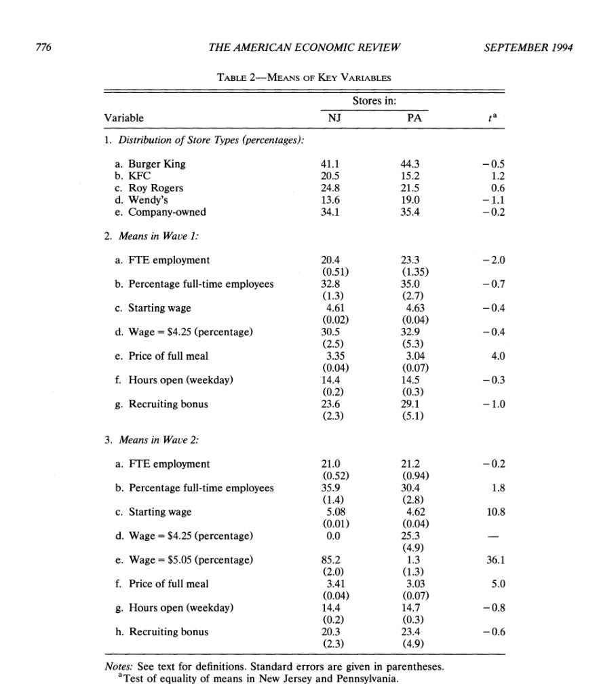
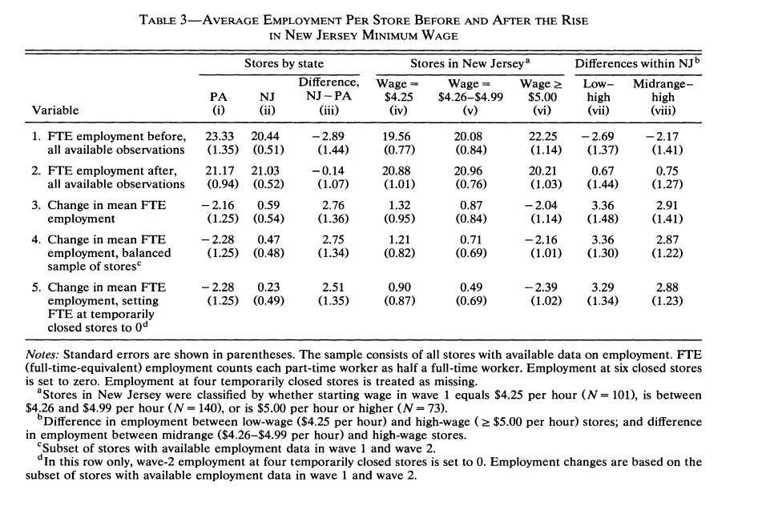
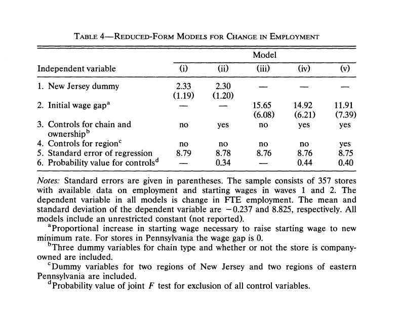
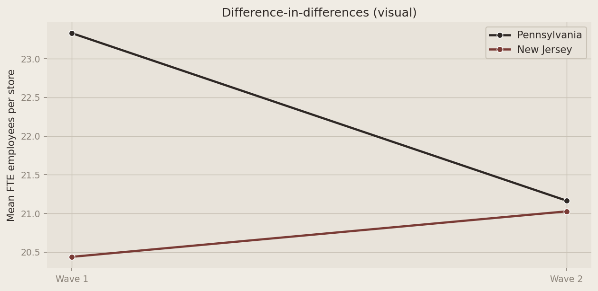

<!DOCTYPE html>
<html xmlns="http://www.w3.org/1999/xhtml" lang="en" xml:lang="en"><head>

<meta charset="utf-8">
<meta name="generator" content="quarto-1.9.13">

<meta name="viewport" content="width=device-width, initial-scale=1.0, user-scalable=yes">


<title>hw2_answers – Eesha Jagdhane</title>
<style>
code{white-space: pre-wrap;}
span.smallcaps{font-variant: small-caps;}
div.columns{display: flex; gap: min(4vw, 1.5em);}
div.column{flex: auto; overflow-x: auto;}
div.hanging-indent{margin-left: 1.5em; text-indent: -1.5em;}
ul.task-list{list-style: none;}
ul.task-list li input[type="checkbox"] {
  width: 0.8em;
  margin: 0 0.8em 0.2em -1em; /* quarto-specific, see https://github.com/quarto-dev/quarto-cli/issues/4556 */ 
  vertical-align: middle;
}
.display.math{display: block; text-align: center; margin: 0.5rem auto;}
/* CSS for syntax highlighting */
html { -webkit-text-size-adjust: 100%; }
pre > code.sourceCode { white-space: pre; position: relative; }
pre > code.sourceCode > span { display: inline-block; line-height: 1.25; }
pre > code.sourceCode > span:empty { height: 1.2em; }
.sourceCode { overflow: visible; }
code.sourceCode > span { color: inherit; text-decoration: inherit; }
div.sourceCode { margin: 1em 0; }
pre.sourceCode { margin: 0; }
@media screen {
div.sourceCode { overflow: auto; }
}
@media print {
pre > code.sourceCode { white-space: pre-wrap; }
pre > code.sourceCode > span { text-indent: -5em; padding-left: 5em; }
}
pre.numberSource code
  { counter-reset: source-line 0; }
pre.numberSource code > span
  { position: relative; left: -4em; counter-increment: source-line; }
pre.numberSource code > span > a:first-child::before
  { content: counter(source-line);
    position: relative; left: -1em; text-align: right; vertical-align: baseline;
    border: none; display: inline-block;
    -webkit-touch-callout: none; -webkit-user-select: none;
    -khtml-user-select: none; -moz-user-select: none;
    -ms-user-select: none; user-select: none;
    padding: 0 4px; width: 4em;
  }
pre.numberSource { margin-left: 3em;  padding-left: 4px; }
div.sourceCode
  {   }
@media screen {
pre > code.sourceCode > span > a:first-child::before { text-decoration: underline; }
}
</style>


<script src="https://cdn.jsdelivr.net/npm/jquery@3.5.1/dist/jquery.min.js" integrity="sha384-ZvpUoO/+PpLXR1lu4jmpXWu80pZlYUAfxl5NsBMWOEPSjUn/6Z/hRTt8+pR6L4N2" crossorigin="anonymous"></script><script src="../../site_libs/clipboard/clipboard.min.js"></script>
<script src="../../site_libs/quarto-html/tabby.min.js"></script>
<script src="../../site_libs/quarto-html/popper.min.js"></script>
<script src="../../site_libs/quarto-html/tippy.umd.min.js"></script>
<script src="../../site_libs/quarto-html/anchor.min.js"></script>
<link href="../../site_libs/quarto-html/tippy.css" rel="stylesheet">
<link href="../../site_libs/quarto-html/light-border.css" rel="stylesheet">
<link href="../../site_libs/quarto-html/quarto-html-734cb40618f438257b19a1e532635a32.min.css" rel="stylesheet" append-hash="true" data-mode="light">
<link href="../../site_libs/quarto-html/quarto-syntax-highlighting-ac077c1e730dfeb5e42400639d17284e.css" rel="stylesheet" id="quarto-text-highlighting-styles">
<script>
  window.MathJax = {
    tex: {
      inlineMath: [["$", "$"], ["\\(", "\\)"]],
      displayMath: [["$$", "$$"], ["\\[", "\\]"]],
      processEscapes: true,
      processEnvironments: true
    },
    options: {
      skipHtmlTags: ["script", "noscript", "style", "textarea", "pre"]
    }
  };
</script>
<script id="MathJax-script" async="" src="https://cdn.jsdelivr.net/npm/mathjax@3/es5/tex-chtml.js"></script>
<script src="https://cdn.jsdelivr.net/npm/requirejs@2.3.6/require.min.js" integrity="sha384-c9c+LnTbwQ3aujuU7ULEPVvgLs+Fn6fJUvIGTsuu1ZcCf11fiEubah0ttpca4ntM sha384-6V1/AdqZRWk1KAlWbKBlGhN7VG4iE/yAZcO6NZPMF8od0vukrvr0tg4qY6NSrItx" crossorigin="anonymous"></script>

<script type="application/javascript">define('jquery', [],function() {return window.jQuery;})</script>


</head>

<body>


<link href="https://fonts.googleapis.com/css2?family=Playfair+Display:wght@700;900&amp;family=DM+Sans:wght@300;400;500&amp;display=swap" rel="stylesheet">
<style>
  * { margin: 0; padding: 0; box-sizing: border-box; }
  body { background: #f0ece4; color: #2e2825; font-family: 'DM Sans', sans-serif; }
  /* No automatic Quarto title banner — custom post-header only */
  #title-block-header,
  header#title-block-header {
    display: none !important;
  }
  a { color: inherit; text-decoration: none; }
  .nav {
    display: flex; justify-content: space-between; align-items: center;
    padding: 1.5rem 4rem; border-bottom: 1px solid #c9c2b6;
    background: #f0ece4; position: sticky; top: 0; z-index: 10;
  }
  .nav-logo { font-size: 0.85rem; letter-spacing: 0.1em; text-transform: uppercase; color: #7a3b35; }
  .nav-links { display: flex; gap: 2rem; list-style: none; }
  .nav-links a {
    font-size: 0.8rem; color: #8a8278; text-transform: uppercase;
    letter-spacing: 0.08em; padding: 0.4rem 0.75rem; display: inline-block;
    transition: color 0.2s, background 0.2s, transform 0.2s;
  }
  .nav-links a:hover { color: #2e2825; background: #e8e3da; transform: translateY(-2px); }
  .nav-cta {
    background: #2e2825; color: #f0ece4; padding: 0.5rem 1.2rem;
    font-size: 0.8rem; letter-spacing: 0.08em; text-transform: uppercase;
    transition: background 0.2s;
  }
  .nav-cta:hover { background: #7a3b35; }
  .post-header {
    padding: 5rem 4rem 3rem;
    border-bottom: 1px solid #c9c2b6;
    max-width: 860px;
  }
  .post-tag { font-size: 0.7rem; color: #7a3b35; letter-spacing: 0.2em; text-transform: uppercase; margin-bottom: 0.5rem; }
  .post-title {
    font-family: 'Playfair Display', serif;
    font-size: clamp(2rem, 4vw, 3.5rem);
    font-weight: 900; line-height: 1.1; color: #2e2825; margin-bottom: 0.5rem;
  }
  .post-subtitle { font-size: 1rem; color: #8a8278; margin-bottom: 1rem; font-style: italic; }
  .post-meta { font-size: 0.75rem; color: #8a8278; }
  .back-link {
    display: inline-block; margin: 2rem 4rem 0;
    font-size: 0.75rem; color: #7a3b35;
    border-bottom: 1px solid #c9a09b; padding-bottom: 2px;
    letter-spacing: 0.08em; text-transform: uppercase;
    transition: color 0.2s, border-color 0.2s;
  }
  .back-link:hover { color: #2e2825; border-color: #2e2825; }
  .post-body { padding: 3rem 4rem 5rem; max-width: 860px; }
  .post-body h2 {
    font-family: 'Playfair Display', serif;
    font-size: 1.8rem; font-weight: 700;
    color: #2e2825; margin: 3rem 0 1rem;
    padding-bottom: 0.5rem; border-bottom: 1px solid #c9c2b6;
  }
  .post-body h3 { font-size: 1.1rem; font-weight: 500; color: #2e2825; margin: 2rem 0 0.75rem; }
  .post-body p { font-size: 0.95rem; color: #6b6560; line-height: 1.9; margin-bottom: 1.25rem; }
  .post-body ul, .post-body ol { padding-left: 1.5rem; margin-bottom: 1.25rem; }
  .post-body li { font-size: 0.95rem; color: #6b6560; line-height: 1.9; margin-bottom: 0.4rem; }
  .post-body strong { color: #2e2825; font-weight: 500; }
  .post-body em { color: #7a3b35; font-style: italic; }
  pre { background: #e8e3da !important; border: 1px solid #c9c2b6 !important; border-radius: 2px !important; padding: 1rem !important; }
  code { font-size: 0.85rem !important; color: #2e2825 !important; }
  table { width: 100%; border-collapse: collapse; margin: 1.5rem 0; font-size: 0.88rem; }
  thead tr { border-bottom: 2px solid #c9c2b6; }
  th { text-align: left; padding: 0.6rem 1rem; font-weight: 500; color: #2e2825; font-size: 0.8rem; text-transform: uppercase; letter-spacing: 0.06em; }
  td { padding: 0.6rem 1rem; color: #6b6560; border-bottom: 1px solid #e8e3da; }
  tbody tr:last-child td { border-bottom: none; }
  .footer-bar {
    margin: 0 4rem; padding: 2rem 0;
    border-top: 1px solid #c9c2b6;
    display: flex; justify-content: space-between;
    font-size: 0.7rem; color: #8a8278;
  }
  @media (max-width: 800px) {
    .nav { padding: 1rem 1.5rem; }
    .post-header, .post-body { padding: 3rem 1.5rem; }
    .back-link { margin: 1.5rem; }
    .footer-bar { margin: 0 1.5rem; flex-direction: column; gap: 0.5rem; }
  }
  /* Folded code: Quarto wraps source in <details>; style summary as a button + state hint */
  body details:has(pre.sourceCode) {
    margin: 0 0 1.25rem 0;
    border: 1px solid #c9c2b6;
    border-radius: 2px;
    background: #e8e3da;
    padding: 0;
  }
  body details:has(pre.sourceCode) > summary {
    cursor: pointer;
    list-style: none;
    font-family: 'DM Sans', sans-serif;
    font-size: 0.72rem;
    font-weight: 500;
    text-transform: uppercase;
    letter-spacing: 0.1em;
    color: #f0ece4;
    background: #2e2825;
    border: none;
    border-radius: 2px 2px 0 0;
    padding: 0.55rem 1rem;
    margin: 0;
    display: flex;
    align-items: center;
    justify-content: space-between;
    gap: 0.75rem;
  }
  body details:has(pre.sourceCode) > summary::-webkit-details-marker { display: none; }
  body details:has(pre.sourceCode) > summary::marker { content: ''; }
  body details:has(pre.sourceCode) > summary::after {
    content: "collapsed";
    font-size: 0.68rem;
    font-weight: 400;
    text-transform: uppercase;
    letter-spacing: 0.06em;
    color: #c9c2b6;
    border: 1px solid #8a8278;
    border-radius: 2px;
    padding: 0.2rem 0.5rem;
    flex-shrink: 0;
  }
  body details:has(pre.sourceCode)[open] > summary {
    background: #7a3b35;
    border-bottom: 1px solid #c9a09b;
    border-radius: 2px 2px 0 0;
  }
  body details:has(pre.sourceCode)[open] > summary::after {
    content: "expanded";
    color: #f0ece4;
    border-color: #f0ece4;
  }
  body details:has(pre.sourceCode) pre.sourceCode {
    margin: 0 !important;
    border-radius: 0 0 2px 2px !important;
    border-top: none !important;
  }
</style>

<div class="nav">
  <span class="nav-logo">Eesha Jagdhane // Portfolio</span>
  <ul class="nav-links">
    <li><a href="../../index.html">Home</a></li>
    <li><a href="../../blogs.html">Blogs &amp; Insights</a></li>
  </ul>
  <a href="../../index.html#contact" class="nav-cta">Get in touch</a>
</div>

<div class="post-header">
  <div class="post-tag">Assignment 2 — Marketing Analytics</div>
  <div class="post-title">Minimum Wages and Employment</div>
  <div class="post-subtitle">Replication notes for Card and Krueger (1994)</div>
  <div class="post-meta">Eesha Jagdhane &nbsp;·&nbsp; April 22, 2026</div>
</div>

<a href="../../blogs.html" class="back-link">← Back to Blogs &amp; Insights</a>

<div class="post-body">
<h2 id="introduction" class="anchored">Introduction</h2>
<p>In 1992, New Jersey raised its minimum wage while neighboring Pennsylvania did not. David Card and Alan Krueger exploited this policy discontinuity as a <em>natural experiment</em>: fast-food restaurants in eastern Pennsylvania serve as a comparison group for restaurants in New Jersey that faced the same local demand shocks but not the same minimum-wage shock. The authors surveyed stores before and after the policy change and compared employment, wages, and prices across states and across waves.</p>
<p>The paper became famous because it challenged a simple textbook prediction that a higher minimum wage must reduce employment, at least in the short run, in a low-wage, high-turnover industry where firms have some wage-setting power and adjustment margins beyond immediate layoffs. The “NJ vs.&nbsp;PA” comparison is the key identification move: it supplies a plausible counterfactual trend for what would have happened in New Jersey absent the reform.</p>
<p>This post <strong>replicates the headline tables</strong> your professor highlighted (Table 2, the upper-left (3) block of Table 3, and Table 4 column (i)) using the public-use flat file (<code>public.dat</code>), the ASCII <code>codebook</code>, and the variable logic in David Card’s <code>check.sas</code> replication file.</p>
<p>For grading transparency, I also embed <strong>screenshots of the published tables</strong> side-by-side with my reproduced numbers.</p>
<h3 id="methodological-note-why-did-is-stronger-than-nj-only" class="anchored">Methodological note: why DiD is stronger than “NJ only”</h3>
<p>A before-and-after comparison in New Jersey alone conflates the minimum wage increase with <em>any</em> aggregate trend affecting fast-food employment between early 1992 and late 1992 (seasonality, local demand, macro shocks, supply disruptions, and so on). A Pennsylvania control group is meant to absorb those common shocks under a parallel trends assumption: absent the policy, NJ and PA would have evolved similarly. The difference-in-differences estimand compares <em>changes</em> across states, which removes time-invariant differences between regions and isolates a policy-induced shift relative to a credible counterfactual trend.</p>
<h2 id="data-processing" class="anchored">Data processing</h2>
<p>The public-use file is fixed-width ASCII (410 stores). Column locations follow the <code>codebook</code> file in <code>njmin/</code>, and variable definitions follow <code>check.sas</code> (for example, <code>EMPTOT</code> and <code>GAP</code>).</p>
<h2 id="table-2-published-means-standard-errors" class="anchored">Table 2 (published means + standard errors)</h2>
<p>Card and Krueger’s Table 2 summarizes store composition and Wave 1 / Wave 2 means for a set of key variables. Below, I reproduce the <strong>same rows shown in your screenshot</strong> (store-type shares, FTE, % full-time, wages, meal price, hours, recruiting bonus).</p>
<p>Standard errors are computed as (s / ) within each state, where (s) is the sample standard deviation and (n) is the count of non-missing stores for that variable.</p>
<p></p>
<h2 id="table-3-the-3-block-columns-iiii-rows-13" class="anchored">Table 3 (the (3) block: columns (i)–(iii), rows 1–3)</h2>
<p>This is the “NJ vs PA” comparison in the top-left of Table 3:</p>
<ul>
<li><strong>Columns:</strong> Pennsylvania, New Jersey, NJ − PA</li>
<li><strong>Rows:</strong> Wave 1 mean FTE, Wave 2 mean FTE, change in mean FTE (mean after − mean before)</li>
</ul>
<p><strong>Closures:</strong> following the paper’s discussion, <strong>permanently closed</strong> stores (<code>STATUS2 = 3</code>) have Wave 2 employment set to <strong>0</strong> when computing Wave 2 means. (Temporarily closed / missing Wave 2 employment are handled as missing in these first rows, matching the published counts like (n=319) for NJ Wave 2 FTE.)</p>
<p><strong>Rows 1–2:</strong> standard errors are (s/) within each state, as in Table 2.</p>
<p><strong>Row 3 (change):</strong> the point estimate is <strong>mean(Wave 2 FTE) − mean(Wave 1 FTE)</strong> in each state (the same object CK prints in the table). The standard errors in parentheses for PA and NJ are <strong>(s_{}/)</strong> where (_i =) Wave 2 − Wave 1 for stores with <strong>non-missing FTE in both waves</strong> (a paired cohort). That rule matches CK’s Pennsylvania <strong>(1.25)</strong> very closely on this public file; New Jersey is a bit below CK’s <strong>(0.54)</strong>, which is expected when Wave‑1 and Wave‑2 samples differ slightly in the ASCII extract.</p>
<p>For <strong>NJ − PA</strong>, the standard error is () using the row‑3 state standard errors above.</p>
<p></p>
<h2 id="table-4-column-i-ols-of-delta-fte-on-the-nj-dummy" class="anchored">Table 4, column (i): OLS of <span class="math inline"><em>Δ</em><em>F</em><em>T</em><em>E</em></span> on the NJ dummy</h2>
<p>This is the simplest “difference-in-differences in regression form” specification:</p>
<p><span class="math display"><em>Δ</em><em>F</em><em>T</em><em>E</em><sub><em>i</em></sub> = <em>α</em> + <em>β</em> ⋅ <em>N</em><em>J</em><sub><em>i</em></sub> + <em>u</em><sub><em>i</em></sub></span></p>
<p>To match the paper’s Table 4 footnote (“<strong>357 stores</strong> with available data in both waves”), I use the <strong><code>C1</code> subset logic from <code>check.sas</code></strong>:</p>
<ul>
<li><code>DEMP</code> (here: (FTE)) is non-missing, <strong>and</strong></li>
<li>either the store is <strong>permanently closed</strong> in Wave 2 (<code>STATUS2 = 3</code>), <strong>or</strong> the store has a <strong>non-missing wage change</strong> (wage = wage_{2}-wage_{1}).</li>
</ul>
<p>This is exactly the <code>IF CLOSED=1 OR (CLOSED=0 AND DWAGE NE .);</code> filter in <code>check.sas</code>, and it yields <strong>(n=357)</strong> in this ASCII public-use file.</p>
<p>Standard errors are the <strong>homoskedastic OLS</strong> standard errors (not HC1), matching the style of the published table.</p>
<p></p>
<h2 id="something-additional-a-did-plot" class="anchored">Something additional: a DiD plot</h2>
<p>This figure summarizes the Table 3 comparison visually: Pennsylvania provides the “would have happened anyway” trend between waves, while New Jersey deviates upward in the second wave relative to that benchmark.</p>
<div id="1cb63209" class="cell" data-execution_count="1">
<details class="code-fold">
<summary>Show Python code</summary>
<div class="code-copy-outer-scaffold"><div class="sourceCode cell-code" id="cb1"><pre class="sourceCode python code-with-copy"><code class="sourceCode python"><span id="cb1-1"><a href="#cb1-1" aria-hidden="true" tabindex="-1"></a><span class="im">from</span> __future__ <span class="im">import</span> annotations</span>
<span id="cb1-2"><a href="#cb1-2" aria-hidden="true" tabindex="-1"></a></span>
<span id="cb1-3"><a href="#cb1-3" aria-hidden="true" tabindex="-1"></a><span class="im">from</span> pathlib <span class="im">import</span> Path</span>
<span id="cb1-4"><a href="#cb1-4" aria-hidden="true" tabindex="-1"></a></span>
<span id="cb1-5"><a href="#cb1-5" aria-hidden="true" tabindex="-1"></a><span class="im">import</span> matplotlib.pyplot <span class="im">as</span> plt</span>
<span id="cb1-6"><a href="#cb1-6" aria-hidden="true" tabindex="-1"></a><span class="im">import</span> numpy <span class="im">as</span> np</span>
<span id="cb1-7"><a href="#cb1-7" aria-hidden="true" tabindex="-1"></a><span class="im">import</span> pandas <span class="im">as</span> pd</span>
<span id="cb1-8"><a href="#cb1-8" aria-hidden="true" tabindex="-1"></a><span class="im">import</span> seaborn <span class="im">as</span> sns</span>
<span id="cb1-9"><a href="#cb1-9" aria-hidden="true" tabindex="-1"></a><span class="im">import</span> statsmodels.api <span class="im">as</span> sm</span>
<span id="cb1-10"><a href="#cb1-10" aria-hidden="true" tabindex="-1"></a><span class="im">from</span> IPython.display <span class="im">import</span> Markdown, display</span>
<span id="cb1-11"><a href="#cb1-11" aria-hidden="true" tabindex="-1"></a></span>
<span id="cb1-12"><a href="#cb1-12" aria-hidden="true" tabindex="-1"></a></span>
<span id="cb1-13"><a href="#cb1-13" aria-hidden="true" tabindex="-1"></a><span class="kw">def</span> markdown_table(headers: <span class="bu">list</span>[<span class="bu">str</span>], rows: <span class="bu">list</span>[<span class="bu">list</span>[<span class="bu">str</span>]]) <span class="op">-&gt;</span> <span class="bu">str</span>:</span>
<span id="cb1-14"><a href="#cb1-14" aria-hidden="true" tabindex="-1"></a>    out <span class="op">=</span> []</span>
<span id="cb1-15"><a href="#cb1-15" aria-hidden="true" tabindex="-1"></a>    out.append(<span class="st">"| "</span> <span class="op">+</span> <span class="st">" | "</span>.join(headers) <span class="op">+</span> <span class="st">" |"</span>)</span>
<span id="cb1-16"><a href="#cb1-16" aria-hidden="true" tabindex="-1"></a>    out.append(<span class="st">"| "</span> <span class="op">+</span> <span class="st">" | "</span>.join([<span class="st">"---"</span>] <span class="op">*</span> <span class="bu">len</span>(headers)) <span class="op">+</span> <span class="st">" |"</span>)</span>
<span id="cb1-17"><a href="#cb1-17" aria-hidden="true" tabindex="-1"></a>    <span class="cf">for</span> r <span class="kw">in</span> rows:</span>
<span id="cb1-18"><a href="#cb1-18" aria-hidden="true" tabindex="-1"></a>        out.append(<span class="st">"| "</span> <span class="op">+</span> <span class="st">" | "</span>.join(r) <span class="op">+</span> <span class="st">" |"</span>)</span>
<span id="cb1-19"><a href="#cb1-19" aria-hidden="true" tabindex="-1"></a>    <span class="cf">return</span> <span class="st">"</span><span class="ch">\n</span><span class="st">"</span>.join(out)</span>
<span id="cb1-20"><a href="#cb1-20" aria-hidden="true" tabindex="-1"></a></span>
<span id="cb1-21"><a href="#cb1-21" aria-hidden="true" tabindex="-1"></a></span>
<span id="cb1-22"><a href="#cb1-22" aria-hidden="true" tabindex="-1"></a>plt.rcParams.update({</span>
<span id="cb1-23"><a href="#cb1-23" aria-hidden="true" tabindex="-1"></a>    <span class="st">"figure.facecolor"</span>: <span class="st">"#f0ece4"</span>,</span>
<span id="cb1-24"><a href="#cb1-24" aria-hidden="true" tabindex="-1"></a>    <span class="st">"axes.facecolor"</span>:   <span class="st">"#e8e3da"</span>,</span>
<span id="cb1-25"><a href="#cb1-25" aria-hidden="true" tabindex="-1"></a>    <span class="st">"axes.grid"</span>: <span class="va">True</span>,</span>
<span id="cb1-26"><a href="#cb1-26" aria-hidden="true" tabindex="-1"></a>    <span class="st">"grid.color"</span>: <span class="st">"#c9c2b6"</span>,</span>
<span id="cb1-27"><a href="#cb1-27" aria-hidden="true" tabindex="-1"></a>    <span class="st">"grid.linewidth"</span>: <span class="fl">0.7</span>,</span>
<span id="cb1-28"><a href="#cb1-28" aria-hidden="true" tabindex="-1"></a>    <span class="st">"axes.spines.top"</span>: <span class="va">False</span>,</span>
<span id="cb1-29"><a href="#cb1-29" aria-hidden="true" tabindex="-1"></a>    <span class="st">"axes.spines.right"</span>: <span class="va">False</span>,</span>
<span id="cb1-30"><a href="#cb1-30" aria-hidden="true" tabindex="-1"></a>    <span class="st">"axes.spines.left"</span>: <span class="va">False</span>,</span>
<span id="cb1-31"><a href="#cb1-31" aria-hidden="true" tabindex="-1"></a>    <span class="st">"axes.spines.bottom"</span>: <span class="va">False</span>,</span>
<span id="cb1-32"><a href="#cb1-32" aria-hidden="true" tabindex="-1"></a>    <span class="st">"font.family"</span>: <span class="st">"sans-serif"</span>,</span>
<span id="cb1-33"><a href="#cb1-33" aria-hidden="true" tabindex="-1"></a>    <span class="st">"axes.titlesize"</span>: <span class="dv">12</span>,</span>
<span id="cb1-34"><a href="#cb1-34" aria-hidden="true" tabindex="-1"></a>    <span class="st">"axes.labelsize"</span>: <span class="dv">10</span>,</span>
<span id="cb1-35"><a href="#cb1-35" aria-hidden="true" tabindex="-1"></a>    <span class="st">"xtick.labelsize"</span>: <span class="dv">9</span>,</span>
<span id="cb1-36"><a href="#cb1-36" aria-hidden="true" tabindex="-1"></a>    <span class="st">"ytick.labelsize"</span>: <span class="dv">9</span>,</span>
<span id="cb1-37"><a href="#cb1-37" aria-hidden="true" tabindex="-1"></a>    <span class="st">"text.color"</span>: <span class="st">"#2e2825"</span>,</span>
<span id="cb1-38"><a href="#cb1-38" aria-hidden="true" tabindex="-1"></a>    <span class="st">"axes.labelcolor"</span>: <span class="st">"#2e2825"</span>,</span>
<span id="cb1-39"><a href="#cb1-39" aria-hidden="true" tabindex="-1"></a>    <span class="st">"xtick.color"</span>: <span class="st">"#8a8278"</span>,</span>
<span id="cb1-40"><a href="#cb1-40" aria-hidden="true" tabindex="-1"></a>    <span class="st">"ytick.color"</span>: <span class="st">"#8a8278"</span>,</span>
<span id="cb1-41"><a href="#cb1-41" aria-hidden="true" tabindex="-1"></a>})</span>
<span id="cb1-42"><a href="#cb1-42" aria-hidden="true" tabindex="-1"></a></span>
<span id="cb1-43"><a href="#cb1-43" aria-hidden="true" tabindex="-1"></a>DATA_PATH <span class="op">=</span> Path(<span class="st">"njmin/public.dat"</span>)</span>
<span id="cb1-44"><a href="#cb1-44" aria-hidden="true" tabindex="-1"></a></span>
<span id="cb1-45"><a href="#cb1-45" aria-hidden="true" tabindex="-1"></a><span class="co"># Codebook columns are 1-based inclusive; pandas colspecs are 0-based [start, end).</span></span>
<span id="cb1-46"><a href="#cb1-46" aria-hidden="true" tabindex="-1"></a>colspecs <span class="op">=</span> [</span>
<span id="cb1-47"><a href="#cb1-47" aria-hidden="true" tabindex="-1"></a>    (<span class="st">"SHEET"</span>, <span class="dv">0</span>, <span class="dv">3</span>),</span>
<span id="cb1-48"><a href="#cb1-48" aria-hidden="true" tabindex="-1"></a>    (<span class="st">"CHAIN"</span>, <span class="dv">4</span>, <span class="dv">5</span>),</span>
<span id="cb1-49"><a href="#cb1-49" aria-hidden="true" tabindex="-1"></a>    (<span class="st">"CO_OWNED"</span>, <span class="dv">6</span>, <span class="dv">7</span>),</span>
<span id="cb1-50"><a href="#cb1-50" aria-hidden="true" tabindex="-1"></a>    (<span class="st">"STATE"</span>, <span class="dv">8</span>, <span class="dv">9</span>),</span>
<span id="cb1-51"><a href="#cb1-51" aria-hidden="true" tabindex="-1"></a>    (<span class="st">"SOUTHJ"</span>, <span class="dv">10</span>, <span class="dv">11</span>),</span>
<span id="cb1-52"><a href="#cb1-52" aria-hidden="true" tabindex="-1"></a>    (<span class="st">"CENTRALJ"</span>, <span class="dv">12</span>, <span class="dv">13</span>),</span>
<span id="cb1-53"><a href="#cb1-53" aria-hidden="true" tabindex="-1"></a>    (<span class="st">"NORTHJ"</span>, <span class="dv">14</span>, <span class="dv">15</span>),</span>
<span id="cb1-54"><a href="#cb1-54" aria-hidden="true" tabindex="-1"></a>    (<span class="st">"PA1"</span>, <span class="dv">16</span>, <span class="dv">17</span>),</span>
<span id="cb1-55"><a href="#cb1-55" aria-hidden="true" tabindex="-1"></a>    (<span class="st">"PA2"</span>, <span class="dv">18</span>, <span class="dv">19</span>),</span>
<span id="cb1-56"><a href="#cb1-56" aria-hidden="true" tabindex="-1"></a>    (<span class="st">"SHORE"</span>, <span class="dv">20</span>, <span class="dv">21</span>),</span>
<span id="cb1-57"><a href="#cb1-57" aria-hidden="true" tabindex="-1"></a>    (<span class="st">"NCALLS"</span>, <span class="dv">22</span>, <span class="dv">24</span>),</span>
<span id="cb1-58"><a href="#cb1-58" aria-hidden="true" tabindex="-1"></a>    (<span class="st">"EMPFT"</span>, <span class="dv">25</span>, <span class="dv">30</span>),</span>
<span id="cb1-59"><a href="#cb1-59" aria-hidden="true" tabindex="-1"></a>    (<span class="st">"EMPPT"</span>, <span class="dv">31</span>, <span class="dv">36</span>),</span>
<span id="cb1-60"><a href="#cb1-60" aria-hidden="true" tabindex="-1"></a>    (<span class="st">"NMGRS"</span>, <span class="dv">37</span>, <span class="dv">42</span>),</span>
<span id="cb1-61"><a href="#cb1-61" aria-hidden="true" tabindex="-1"></a>    (<span class="st">"WAGE_ST"</span>, <span class="dv">43</span>, <span class="dv">48</span>),</span>
<span id="cb1-62"><a href="#cb1-62" aria-hidden="true" tabindex="-1"></a>    (<span class="st">"INCTIME"</span>, <span class="dv">49</span>, <span class="dv">54</span>),</span>
<span id="cb1-63"><a href="#cb1-63" aria-hidden="true" tabindex="-1"></a>    (<span class="st">"FIRSTINC"</span>, <span class="dv">55</span>, <span class="dv">60</span>),</span>
<span id="cb1-64"><a href="#cb1-64" aria-hidden="true" tabindex="-1"></a>    (<span class="st">"BONUS"</span>, <span class="dv">61</span>, <span class="dv">62</span>),</span>
<span id="cb1-65"><a href="#cb1-65" aria-hidden="true" tabindex="-1"></a>    (<span class="st">"PCTAFF"</span>, <span class="dv">63</span>, <span class="dv">68</span>),</span>
<span id="cb1-66"><a href="#cb1-66" aria-hidden="true" tabindex="-1"></a>    (<span class="st">"MEALS"</span>, <span class="dv">69</span>, <span class="dv">70</span>),</span>
<span id="cb1-67"><a href="#cb1-67" aria-hidden="true" tabindex="-1"></a>    (<span class="st">"OPEN"</span>, <span class="dv">71</span>, <span class="dv">76</span>),</span>
<span id="cb1-68"><a href="#cb1-68" aria-hidden="true" tabindex="-1"></a>    (<span class="st">"HRSOPEN"</span>, <span class="dv">77</span>, <span class="dv">82</span>),</span>
<span id="cb1-69"><a href="#cb1-69" aria-hidden="true" tabindex="-1"></a>    (<span class="st">"PSODA"</span>, <span class="dv">83</span>, <span class="dv">88</span>),</span>
<span id="cb1-70"><a href="#cb1-70" aria-hidden="true" tabindex="-1"></a>    (<span class="st">"PFRY"</span>, <span class="dv">89</span>, <span class="dv">94</span>),</span>
<span id="cb1-71"><a href="#cb1-71" aria-hidden="true" tabindex="-1"></a>    (<span class="st">"PENTREE"</span>, <span class="dv">95</span>, <span class="dv">100</span>),</span>
<span id="cb1-72"><a href="#cb1-72" aria-hidden="true" tabindex="-1"></a>    (<span class="st">"NREGS"</span>, <span class="dv">101</span>, <span class="dv">103</span>),</span>
<span id="cb1-73"><a href="#cb1-73" aria-hidden="true" tabindex="-1"></a>    (<span class="st">"NREGS11"</span>, <span class="dv">104</span>, <span class="dv">106</span>),</span>
<span id="cb1-74"><a href="#cb1-74" aria-hidden="true" tabindex="-1"></a>    (<span class="st">"TYPE2"</span>, <span class="dv">107</span>, <span class="dv">108</span>),</span>
<span id="cb1-75"><a href="#cb1-75" aria-hidden="true" tabindex="-1"></a>    (<span class="st">"STATUS2"</span>, <span class="dv">109</span>, <span class="dv">110</span>),</span>
<span id="cb1-76"><a href="#cb1-76" aria-hidden="true" tabindex="-1"></a>    (<span class="st">"DATE2"</span>, <span class="dv">111</span>, <span class="dv">117</span>),</span>
<span id="cb1-77"><a href="#cb1-77" aria-hidden="true" tabindex="-1"></a>    (<span class="st">"NCALLS2"</span>, <span class="dv">118</span>, <span class="dv">120</span>),</span>
<span id="cb1-78"><a href="#cb1-78" aria-hidden="true" tabindex="-1"></a>    (<span class="st">"EMPFT2"</span>, <span class="dv">121</span>, <span class="dv">126</span>),</span>
<span id="cb1-79"><a href="#cb1-79" aria-hidden="true" tabindex="-1"></a>    (<span class="st">"EMPPT2"</span>, <span class="dv">127</span>, <span class="dv">132</span>),</span>
<span id="cb1-80"><a href="#cb1-80" aria-hidden="true" tabindex="-1"></a>    (<span class="st">"NMGRS2"</span>, <span class="dv">133</span>, <span class="dv">138</span>),</span>
<span id="cb1-81"><a href="#cb1-81" aria-hidden="true" tabindex="-1"></a>    (<span class="st">"WAGE_ST2"</span>, <span class="dv">139</span>, <span class="dv">144</span>),</span>
<span id="cb1-82"><a href="#cb1-82" aria-hidden="true" tabindex="-1"></a>    (<span class="st">"INCTIME2"</span>, <span class="dv">145</span>, <span class="dv">150</span>),</span>
<span id="cb1-83"><a href="#cb1-83" aria-hidden="true" tabindex="-1"></a>    (<span class="st">"FIRSTIN2"</span>, <span class="dv">151</span>, <span class="dv">156</span>),</span>
<span id="cb1-84"><a href="#cb1-84" aria-hidden="true" tabindex="-1"></a>    (<span class="st">"SPECIAL2"</span>, <span class="dv">157</span>, <span class="dv">158</span>),</span>
<span id="cb1-85"><a href="#cb1-85" aria-hidden="true" tabindex="-1"></a>    (<span class="st">"MEALS2"</span>, <span class="dv">159</span>, <span class="dv">160</span>),</span>
<span id="cb1-86"><a href="#cb1-86" aria-hidden="true" tabindex="-1"></a>    (<span class="st">"OPEN2R"</span>, <span class="dv">161</span>, <span class="dv">166</span>),</span>
<span id="cb1-87"><a href="#cb1-87" aria-hidden="true" tabindex="-1"></a>    (<span class="st">"HRSOPEN2"</span>, <span class="dv">167</span>, <span class="dv">172</span>),</span>
<span id="cb1-88"><a href="#cb1-88" aria-hidden="true" tabindex="-1"></a>    (<span class="st">"PSODA2"</span>, <span class="dv">173</span>, <span class="dv">178</span>),</span>
<span id="cb1-89"><a href="#cb1-89" aria-hidden="true" tabindex="-1"></a>    (<span class="st">"PFRY2"</span>, <span class="dv">179</span>, <span class="dv">184</span>),</span>
<span id="cb1-90"><a href="#cb1-90" aria-hidden="true" tabindex="-1"></a>    (<span class="st">"PENTREE2"</span>, <span class="dv">185</span>, <span class="dv">190</span>),</span>
<span id="cb1-91"><a href="#cb1-91" aria-hidden="true" tabindex="-1"></a>    (<span class="st">"NREGS2"</span>, <span class="dv">191</span>, <span class="dv">193</span>),</span>
<span id="cb1-92"><a href="#cb1-92" aria-hidden="true" tabindex="-1"></a>    (<span class="st">"NREGS112"</span>, <span class="dv">194</span>, <span class="dv">196</span>),</span>
<span id="cb1-93"><a href="#cb1-93" aria-hidden="true" tabindex="-1"></a>]</span>
<span id="cb1-94"><a href="#cb1-94" aria-hidden="true" tabindex="-1"></a></span>
<span id="cb1-95"><a href="#cb1-95" aria-hidden="true" tabindex="-1"></a>df <span class="op">=</span> pd.read_fwf(</span>
<span id="cb1-96"><a href="#cb1-96" aria-hidden="true" tabindex="-1"></a>    DATA_PATH,</span>
<span id="cb1-97"><a href="#cb1-97" aria-hidden="true" tabindex="-1"></a>    colspecs<span class="op">=</span>[(a, b) <span class="cf">for</span> _, a, b <span class="kw">in</span> colspecs],</span>
<span id="cb1-98"><a href="#cb1-98" aria-hidden="true" tabindex="-1"></a>    names<span class="op">=</span>[n <span class="cf">for</span> n, _, _ <span class="kw">in</span> colspecs],</span>
<span id="cb1-99"><a href="#cb1-99" aria-hidden="true" tabindex="-1"></a>    dtype<span class="op">=</span><span class="bu">str</span>,</span>
<span id="cb1-100"><a href="#cb1-100" aria-hidden="true" tabindex="-1"></a>)</span>
<span id="cb1-101"><a href="#cb1-101" aria-hidden="true" tabindex="-1"></a></span>
<span id="cb1-102"><a href="#cb1-102" aria-hidden="true" tabindex="-1"></a><span class="cf">for</span> c <span class="kw">in</span> df.columns:</span>
<span id="cb1-103"><a href="#cb1-103" aria-hidden="true" tabindex="-1"></a>    df[c] <span class="op">=</span> df[c].<span class="bu">str</span>.strip()</span>
<span id="cb1-104"><a href="#cb1-104" aria-hidden="true" tabindex="-1"></a></span>
<span id="cb1-105"><a href="#cb1-105" aria-hidden="true" tabindex="-1"></a>num_cols <span class="op">=</span> [c <span class="cf">for</span> c <span class="kw">in</span> df.columns <span class="cf">if</span> c <span class="op">!=</span> <span class="st">"SHEET"</span>]</span>
<span id="cb1-106"><a href="#cb1-106" aria-hidden="true" tabindex="-1"></a>df[num_cols] <span class="op">=</span> df[num_cols].<span class="bu">apply</span>(pd.to_numeric, errors<span class="op">=</span><span class="st">"coerce"</span>)</span>
<span id="cb1-107"><a href="#cb1-107" aria-hidden="true" tabindex="-1"></a></span>
<span id="cb1-108"><a href="#cb1-108" aria-hidden="true" tabindex="-1"></a>df[<span class="st">"NJ"</span>] <span class="op">=</span> (df[<span class="st">"STATE"</span>] <span class="op">==</span> <span class="dv">1</span>).astype(<span class="bu">int</span>)</span>
<span id="cb1-109"><a href="#cb1-109" aria-hidden="true" tabindex="-1"></a></span>
<span id="cb1-110"><a href="#cb1-110" aria-hidden="true" tabindex="-1"></a>df[<span class="st">"FTE_W1"</span>] <span class="op">=</span> df[<span class="st">"EMPFT"</span>] <span class="op">+</span> df[<span class="st">"NMGRS"</span>] <span class="op">+</span> <span class="fl">0.5</span> <span class="op">*</span> df[<span class="st">"EMPPT"</span>]</span>
<span id="cb1-111"><a href="#cb1-111" aria-hidden="true" tabindex="-1"></a>df[<span class="st">"FTE_W2_RAW"</span>] <span class="op">=</span> df[<span class="st">"EMPFT2"</span>] <span class="op">+</span> df[<span class="st">"NMGRS2"</span>] <span class="op">+</span> <span class="fl">0.5</span> <span class="op">*</span> df[<span class="st">"EMPPT2"</span>]</span>
<span id="cb1-112"><a href="#cb1-112" aria-hidden="true" tabindex="-1"></a></span>
<span id="cb1-113"><a href="#cb1-113" aria-hidden="true" tabindex="-1"></a><span class="co"># Permanently closed stores: wave-2 employment is 0 (homework instruction; STATUS2 == 3).</span></span>
<span id="cb1-114"><a href="#cb1-114" aria-hidden="true" tabindex="-1"></a>df[<span class="st">"FTE_W2"</span>] <span class="op">=</span> np.where(df[<span class="st">"STATUS2"</span>] <span class="op">==</span> <span class="dv">3</span>, <span class="fl">0.0</span>, df[<span class="st">"FTE_W2_RAW"</span>])</span>
<span id="cb1-115"><a href="#cb1-115" aria-hidden="true" tabindex="-1"></a></span>
<span id="cb1-116"><a href="#cb1-116" aria-hidden="true" tabindex="-1"></a>df[<span class="st">"PMEAL_W1"</span>] <span class="op">=</span> df[<span class="st">"PSODA"</span>] <span class="op">+</span> df[<span class="st">"PFRY"</span>] <span class="op">+</span> df[<span class="st">"PENTREE"</span>]</span>
<span id="cb1-117"><a href="#cb1-117" aria-hidden="true" tabindex="-1"></a>df[<span class="st">"PMEAL_W2"</span>] <span class="op">=</span> df[<span class="st">"PSODA2"</span>] <span class="op">+</span> df[<span class="st">"PFRY2"</span>] <span class="op">+</span> df[<span class="st">"PENTREE2"</span>]</span>
<span id="cb1-118"><a href="#cb1-118" aria-hidden="true" tabindex="-1"></a></span>
<span id="cb1-119"><a href="#cb1-119" aria-hidden="true" tabindex="-1"></a><span class="co"># % full-time employees (CK definition used in replications: EMPFT / EMPTOT, where EMPTOT = FTE)</span></span>
<span id="cb1-120"><a href="#cb1-120" aria-hidden="true" tabindex="-1"></a>df[<span class="st">"PFT_W1"</span>] <span class="op">=</span> np.where(df[<span class="st">"FTE_W1"</span>] <span class="op">&gt;</span> <span class="dv">0</span>, df[<span class="st">"EMPFT"</span>] <span class="op">/</span> df[<span class="st">"FTE_W1"</span>], np.nan)</span>
<span id="cb1-121"><a href="#cb1-121" aria-hidden="true" tabindex="-1"></a>df[<span class="st">"PFT_W2"</span>] <span class="op">=</span> np.where(df[<span class="st">"FTE_W2"</span>] <span class="op">&gt;</span> <span class="dv">0</span>, df[<span class="st">"EMPFT2"</span>] <span class="op">/</span> df[<span class="st">"FTE_W2"</span>], np.nan)</span>
<span id="cb1-122"><a href="#cb1-122" aria-hidden="true" tabindex="-1"></a></span>
<span id="cb1-123"><a href="#cb1-123" aria-hidden="true" tabindex="-1"></a><span class="co"># Wage indicators</span></span>
<span id="cb1-124"><a href="#cb1-124" aria-hidden="true" tabindex="-1"></a>df[<span class="st">"WAGE425_W1"</span>] <span class="op">=</span> (df[<span class="st">"WAGE_ST"</span>] <span class="op">==</span> <span class="fl">4.25</span>).astype(<span class="bu">float</span>)</span>
<span id="cb1-125"><a href="#cb1-125" aria-hidden="true" tabindex="-1"></a>df[<span class="st">"WAGE425_W2"</span>] <span class="op">=</span> (df[<span class="st">"WAGE_ST2"</span>] <span class="op">==</span> <span class="fl">4.25</span>).astype(<span class="bu">float</span>)</span>
<span id="cb1-126"><a href="#cb1-126" aria-hidden="true" tabindex="-1"></a>df[<span class="st">"WAGE505_W2"</span>] <span class="op">=</span> (df[<span class="st">"WAGE_ST2"</span>] <span class="op">==</span> <span class="fl">5.05</span>).astype(<span class="bu">float</span>)</span>
<span id="cb1-127"><a href="#cb1-127" aria-hidden="true" tabindex="-1"></a></span>
<span id="cb1-128"><a href="#cb1-128" aria-hidden="true" tabindex="-1"></a><span class="co"># Recruiting bonus indicators (0/1 in public data)</span></span>
<span id="cb1-129"><a href="#cb1-129" aria-hidden="true" tabindex="-1"></a>df[<span class="st">"BONUS_W1"</span>] <span class="op">=</span> (df[<span class="st">"BONUS"</span>] <span class="op">==</span> <span class="dv">1</span>).astype(<span class="bu">float</span>)</span>
<span id="cb1-130"><a href="#cb1-130" aria-hidden="true" tabindex="-1"></a>df[<span class="st">"BONUS_W2"</span>] <span class="op">=</span> (df[<span class="st">"SPECIAL2"</span>] <span class="op">==</span> <span class="dv">1</span>).astype(<span class="bu">float</span>)</span>
<span id="cb1-131"><a href="#cb1-131" aria-hidden="true" tabindex="-1"></a></span>
<span id="cb1-132"><a href="#cb1-132" aria-hidden="true" tabindex="-1"></a><span class="co"># Wage change (used for Table 4 sample selection in check.sas)</span></span>
<span id="cb1-133"><a href="#cb1-133" aria-hidden="true" tabindex="-1"></a>df[<span class="st">"DWAGE"</span>] <span class="op">=</span> df[<span class="st">"WAGE_ST2"</span>] <span class="op">-</span> df[<span class="st">"WAGE_ST"</span>]</span>
<span id="cb1-134"><a href="#cb1-134" aria-hidden="true" tabindex="-1"></a></span>
<span id="cb1-135"><a href="#cb1-135" aria-hidden="true" tabindex="-1"></a><span class="co"># GAP definition from check.sas (useful for extensions beyond Table 4 col. (i))</span></span>
<span id="cb1-136"><a href="#cb1-136" aria-hidden="true" tabindex="-1"></a>df[<span class="st">"GAP"</span>] <span class="op">=</span> np.where(df[<span class="st">"STATE"</span>] <span class="op">==</span> <span class="dv">0</span>, <span class="fl">0.0</span>, np.nan)</span>
<span id="cb1-137"><a href="#cb1-137" aria-hidden="true" tabindex="-1"></a>mask_nj_below <span class="op">=</span> (df[<span class="st">"STATE"</span>] <span class="op">==</span> <span class="dv">1</span>) <span class="op">&amp;</span> df[<span class="st">"WAGE_ST"</span>].notna()</span>
<span id="cb1-138"><a href="#cb1-138" aria-hidden="true" tabindex="-1"></a>df.loc[mask_nj_below <span class="op">&amp;</span> (df[<span class="st">"WAGE_ST"</span>] <span class="op">&gt;=</span> <span class="fl">5.05</span>), <span class="st">"GAP"</span>] <span class="op">=</span> <span class="fl">0.0</span></span>
<span id="cb1-139"><a href="#cb1-139" aria-hidden="true" tabindex="-1"></a>df.loc[mask_nj_below <span class="op">&amp;</span> (df[<span class="st">"WAGE_ST"</span>] <span class="op">&gt;</span> <span class="dv">0</span>) <span class="op">&amp;</span> (df[<span class="st">"WAGE_ST"</span>] <span class="op">&lt;</span> <span class="fl">5.05</span>), <span class="st">"GAP"</span>] <span class="op">=</span> (<span class="fl">5.05</span> <span class="op">-</span> df[<span class="st">"WAGE_ST"</span>]) <span class="op">/</span> df[<span class="st">"WAGE_ST"</span>]</span>
<span id="cb1-140"><a href="#cb1-140" aria-hidden="true" tabindex="-1"></a></span>
<span id="cb1-141"><a href="#cb1-141" aria-hidden="true" tabindex="-1"></a>df[<span class="st">"D_FTE"</span>] <span class="op">=</span> df[<span class="st">"FTE_W2"</span>] <span class="op">-</span> df[<span class="st">"FTE_W1"</span>]</span>
<span id="cb1-142"><a href="#cb1-142" aria-hidden="true" tabindex="-1"></a></span>
<span id="cb1-143"><a href="#cb1-143" aria-hidden="true" tabindex="-1"></a>closed <span class="op">=</span> df[<span class="st">"STATUS2"</span>] <span class="op">==</span> <span class="dv">3</span></span>
<span id="cb1-144"><a href="#cb1-144" aria-hidden="true" tabindex="-1"></a>table4_mask <span class="op">=</span> df[<span class="st">"D_FTE"</span>].notna() <span class="op">&amp;</span> (closed <span class="op">|</span> ((<span class="op">~</span>closed) <span class="op">&amp;</span> df[<span class="st">"DWAGE"</span>].notna()))</span>
<span id="cb1-145"><a href="#cb1-145" aria-hidden="true" tabindex="-1"></a>reg_df <span class="op">=</span> df.loc[table4_mask].copy()</span>
<span id="cb1-146"><a href="#cb1-146" aria-hidden="true" tabindex="-1"></a></span>
<span id="cb1-147"><a href="#cb1-147" aria-hidden="true" tabindex="-1"></a>display(Markdown(<span class="st">"### Peek at the loaded data"</span>))</span>
<span id="cb1-148"><a href="#cb1-148" aria-hidden="true" tabindex="-1"></a>display(df.head())</span>
<span id="cb1-149"><a href="#cb1-149" aria-hidden="true" tabindex="-1"></a></span>
<span id="cb1-150"><a href="#cb1-150" aria-hidden="true" tabindex="-1"></a></span>
<span id="cb1-151"><a href="#cb1-151" aria-hidden="true" tabindex="-1"></a><span class="kw">def</span> mean_se(x: pd.Series) <span class="op">-&gt;</span> <span class="bu">tuple</span>[<span class="bu">float</span>, <span class="bu">float</span>, <span class="bu">int</span>]:</span>
<span id="cb1-152"><a href="#cb1-152" aria-hidden="true" tabindex="-1"></a>    v <span class="op">=</span> x.dropna().astype(<span class="bu">float</span>)</span>
<span id="cb1-153"><a href="#cb1-153" aria-hidden="true" tabindex="-1"></a>    n <span class="op">=</span> <span class="bu">int</span>(v.shape[<span class="dv">0</span>])</span>
<span id="cb1-154"><a href="#cb1-154" aria-hidden="true" tabindex="-1"></a>    <span class="cf">if</span> n <span class="op">==</span> <span class="dv">0</span>:</span>
<span id="cb1-155"><a href="#cb1-155" aria-hidden="true" tabindex="-1"></a>        <span class="cf">return</span> <span class="bu">float</span>(<span class="st">"nan"</span>), <span class="bu">float</span>(<span class="st">"nan"</span>), <span class="dv">0</span></span>
<span id="cb1-156"><a href="#cb1-156" aria-hidden="true" tabindex="-1"></a>    m <span class="op">=</span> <span class="bu">float</span>(v.mean())</span>
<span id="cb1-157"><a href="#cb1-157" aria-hidden="true" tabindex="-1"></a>    <span class="cf">if</span> n <span class="op">&lt;=</span> <span class="dv">1</span>:</span>
<span id="cb1-158"><a href="#cb1-158" aria-hidden="true" tabindex="-1"></a>        <span class="cf">return</span> m, <span class="bu">float</span>(<span class="st">"nan"</span>), n</span>
<span id="cb1-159"><a href="#cb1-159" aria-hidden="true" tabindex="-1"></a>    s <span class="op">=</span> <span class="bu">float</span>(v.std(ddof<span class="op">=</span><span class="dv">1</span>))</span>
<span id="cb1-160"><a href="#cb1-160" aria-hidden="true" tabindex="-1"></a>    <span class="cf">return</span> m, <span class="bu">float</span>(s <span class="op">/</span> np.sqrt(n)), n</span>
<span id="cb1-161"><a href="#cb1-161" aria-hidden="true" tabindex="-1"></a></span>
<span id="cb1-162"><a href="#cb1-162" aria-hidden="true" tabindex="-1"></a></span>
<span id="cb1-163"><a href="#cb1-163" aria-hidden="true" tabindex="-1"></a><span class="kw">def</span> fmt_mean_se(m: <span class="bu">float</span>, se: <span class="bu">float</span>) <span class="op">-&gt;</span> <span class="bu">str</span>:</span>
<span id="cb1-164"><a href="#cb1-164" aria-hidden="true" tabindex="-1"></a>    <span class="cf">if</span> np.isnan(m):</span>
<span id="cb1-165"><a href="#cb1-165" aria-hidden="true" tabindex="-1"></a>        <span class="cf">return</span> <span class="st">""</span></span>
<span id="cb1-166"><a href="#cb1-166" aria-hidden="true" tabindex="-1"></a>    <span class="cf">if</span> np.isnan(se):</span>
<span id="cb1-167"><a href="#cb1-167" aria-hidden="true" tabindex="-1"></a>        <span class="cf">return</span> <span class="ss">f"</span><span class="sc">{</span>m<span class="sc">:.2f}</span><span class="ss">"</span></span>
<span id="cb1-168"><a href="#cb1-168" aria-hidden="true" tabindex="-1"></a>    <span class="cf">return</span> <span class="ss">f"</span><span class="sc">{</span>m<span class="sc">:.2f}</span><span class="ss"> (</span><span class="sc">{</span>se<span class="sc">:.2f}</span><span class="ss">)"</span></span>
<span id="cb1-169"><a href="#cb1-169" aria-hidden="true" tabindex="-1"></a></span>
<span id="cb1-170"><a href="#cb1-170" aria-hidden="true" tabindex="-1"></a></span>
<span id="cb1-171"><a href="#cb1-171" aria-hidden="true" tabindex="-1"></a><span class="kw">def</span> t_equal_means(nj: pd.Series, pa: pd.Series) <span class="op">-&gt;</span> <span class="bu">str</span>:</span>
<span id="cb1-172"><a href="#cb1-172" aria-hidden="true" tabindex="-1"></a>    a <span class="op">=</span> nj.dropna().astype(<span class="bu">float</span>)</span>
<span id="cb1-173"><a href="#cb1-173" aria-hidden="true" tabindex="-1"></a>    b <span class="op">=</span> pa.dropna().astype(<span class="bu">float</span>)</span>
<span id="cb1-174"><a href="#cb1-174" aria-hidden="true" tabindex="-1"></a>    <span class="cf">if</span> a.size <span class="op">&lt;</span> <span class="dv">2</span> <span class="kw">or</span> b.size <span class="op">&lt;</span> <span class="dv">2</span>:</span>
<span id="cb1-175"><a href="#cb1-175" aria-hidden="true" tabindex="-1"></a>        <span class="cf">return</span> <span class="st">"—"</span></span>
<span id="cb1-176"><a href="#cb1-176" aria-hidden="true" tabindex="-1"></a></span>
<span id="cb1-177"><a href="#cb1-177" aria-hidden="true" tabindex="-1"></a>    ma <span class="op">=</span> <span class="bu">float</span>(a.mean())</span>
<span id="cb1-178"><a href="#cb1-178" aria-hidden="true" tabindex="-1"></a>    mb <span class="op">=</span> <span class="bu">float</span>(b.mean())</span>
<span id="cb1-179"><a href="#cb1-179" aria-hidden="true" tabindex="-1"></a>    va <span class="op">=</span> <span class="bu">float</span>(a.var(ddof<span class="op">=</span><span class="dv">1</span>))</span>
<span id="cb1-180"><a href="#cb1-180" aria-hidden="true" tabindex="-1"></a>    vb <span class="op">=</span> <span class="bu">float</span>(b.var(ddof<span class="op">=</span><span class="dv">1</span>))</span>
<span id="cb1-181"><a href="#cb1-181" aria-hidden="true" tabindex="-1"></a>    na <span class="op">=</span> <span class="bu">int</span>(a.size)</span>
<span id="cb1-182"><a href="#cb1-182" aria-hidden="true" tabindex="-1"></a>    nb <span class="op">=</span> <span class="bu">int</span>(b.size)</span>
<span id="cb1-183"><a href="#cb1-183" aria-hidden="true" tabindex="-1"></a></span>
<span id="cb1-184"><a href="#cb1-184" aria-hidden="true" tabindex="-1"></a>    se <span class="op">=</span> <span class="bu">float</span>(np.sqrt(va <span class="op">/</span> na <span class="op">+</span> vb <span class="op">/</span> nb))</span>
<span id="cb1-185"><a href="#cb1-185" aria-hidden="true" tabindex="-1"></a>    <span class="cf">if</span> se <span class="op">==</span> <span class="fl">0.0</span>:</span>
<span id="cb1-186"><a href="#cb1-186" aria-hidden="true" tabindex="-1"></a>        <span class="cf">return</span> <span class="st">"—"</span></span>
<span id="cb1-187"><a href="#cb1-187" aria-hidden="true" tabindex="-1"></a></span>
<span id="cb1-188"><a href="#cb1-188" aria-hidden="true" tabindex="-1"></a>    t <span class="op">=</span> (ma <span class="op">-</span> mb) <span class="op">/</span> se</span>
<span id="cb1-189"><a href="#cb1-189" aria-hidden="true" tabindex="-1"></a>    <span class="cf">return</span> <span class="ss">f"</span><span class="sc">{</span>t<span class="sc">:.1f}</span><span class="ss">"</span></span>
<span id="cb1-190"><a href="#cb1-190" aria-hidden="true" tabindex="-1"></a></span>
<span id="cb1-191"><a href="#cb1-191" aria-hidden="true" tabindex="-1"></a></span>
<span id="cb1-192"><a href="#cb1-192" aria-hidden="true" tabindex="-1"></a><span class="kw">def</span> table2_ck_block(x: pd.DataFrame) <span class="op">-&gt;</span> <span class="bu">str</span>:</span>
<span id="cb1-193"><a href="#cb1-193" aria-hidden="true" tabindex="-1"></a>    nj <span class="op">=</span> x.loc[x[<span class="st">"STATE"</span>] <span class="op">==</span> <span class="dv">1</span>]</span>
<span id="cb1-194"><a href="#cb1-194" aria-hidden="true" tabindex="-1"></a>    pa <span class="op">=</span> x.loc[x[<span class="st">"STATE"</span>] <span class="op">==</span> <span class="dv">0</span>]</span>
<span id="cb1-195"><a href="#cb1-195" aria-hidden="true" tabindex="-1"></a></span>
<span id="cb1-196"><a href="#cb1-196" aria-hidden="true" tabindex="-1"></a>    <span class="kw">def</span> row_from_series(label: <span class="bu">str</span>, nj_s: pd.Series, pa_s: pd.Series) <span class="op">-&gt;</span> <span class="bu">list</span>[<span class="bu">str</span>]:</span>
<span id="cb1-197"><a href="#cb1-197" aria-hidden="true" tabindex="-1"></a>        m_nj, se_nj, _ <span class="op">=</span> mean_se(nj_s)</span>
<span id="cb1-198"><a href="#cb1-198" aria-hidden="true" tabindex="-1"></a>        m_pa, se_pa, _ <span class="op">=</span> mean_se(pa_s)</span>
<span id="cb1-199"><a href="#cb1-199" aria-hidden="true" tabindex="-1"></a>        <span class="cf">return</span> [label, fmt_mean_se(m_nj, se_nj), fmt_mean_se(m_pa, se_pa), t_equal_means(nj_s, pa_s)]</span>
<span id="cb1-200"><a href="#cb1-200" aria-hidden="true" tabindex="-1"></a></span>
<span id="cb1-201"><a href="#cb1-201" aria-hidden="true" tabindex="-1"></a>    rows: <span class="bu">list</span>[<span class="bu">list</span>[<span class="bu">str</span>]] <span class="op">=</span> []</span>
<span id="cb1-202"><a href="#cb1-202" aria-hidden="true" tabindex="-1"></a></span>
<span id="cb1-203"><a href="#cb1-203" aria-hidden="true" tabindex="-1"></a>    <span class="co"># Section 1: store type shares (percent)</span></span>
<span id="cb1-204"><a href="#cb1-204" aria-hidden="true" tabindex="-1"></a>    <span class="cf">for</span> chain, label <span class="kw">in</span> [</span>
<span id="cb1-205"><a href="#cb1-205" aria-hidden="true" tabindex="-1"></a>        (<span class="dv">1</span>, <span class="st">"a. Burger King"</span>),</span>
<span id="cb1-206"><a href="#cb1-206" aria-hidden="true" tabindex="-1"></a>        (<span class="dv">2</span>, <span class="st">"b. KFC"</span>),</span>
<span id="cb1-207"><a href="#cb1-207" aria-hidden="true" tabindex="-1"></a>        (<span class="dv">3</span>, <span class="st">"c. Roy Rogers"</span>),</span>
<span id="cb1-208"><a href="#cb1-208" aria-hidden="true" tabindex="-1"></a>        (<span class="dv">4</span>, <span class="st">"d. Wendy's"</span>),</span>
<span id="cb1-209"><a href="#cb1-209" aria-hidden="true" tabindex="-1"></a>    ]:</span>
<span id="cb1-210"><a href="#cb1-210" aria-hidden="true" tabindex="-1"></a>        rows.append(</span>
<span id="cb1-211"><a href="#cb1-211" aria-hidden="true" tabindex="-1"></a>            row_from_series(</span>
<span id="cb1-212"><a href="#cb1-212" aria-hidden="true" tabindex="-1"></a>                label,</span>
<span id="cb1-213"><a href="#cb1-213" aria-hidden="true" tabindex="-1"></a>                (nj[<span class="st">"CHAIN"</span>] <span class="op">==</span> chain).astype(<span class="bu">float</span>) <span class="op">*</span> <span class="fl">100.0</span>,</span>
<span id="cb1-214"><a href="#cb1-214" aria-hidden="true" tabindex="-1"></a>                (pa[<span class="st">"CHAIN"</span>] <span class="op">==</span> chain).astype(<span class="bu">float</span>) <span class="op">*</span> <span class="fl">100.0</span>,</span>
<span id="cb1-215"><a href="#cb1-215" aria-hidden="true" tabindex="-1"></a>            )</span>
<span id="cb1-216"><a href="#cb1-216" aria-hidden="true" tabindex="-1"></a>        )</span>
<span id="cb1-217"><a href="#cb1-217" aria-hidden="true" tabindex="-1"></a></span>
<span id="cb1-218"><a href="#cb1-218" aria-hidden="true" tabindex="-1"></a>    rows.append(</span>
<span id="cb1-219"><a href="#cb1-219" aria-hidden="true" tabindex="-1"></a>        row_from_series(</span>
<span id="cb1-220"><a href="#cb1-220" aria-hidden="true" tabindex="-1"></a>            <span class="st">"e. Company-owned"</span>,</span>
<span id="cb1-221"><a href="#cb1-221" aria-hidden="true" tabindex="-1"></a>            nj[<span class="st">"CO_OWNED"</span>].astype(<span class="bu">float</span>) <span class="op">*</span> <span class="fl">100.0</span>,</span>
<span id="cb1-222"><a href="#cb1-222" aria-hidden="true" tabindex="-1"></a>            pa[<span class="st">"CO_OWNED"</span>].astype(<span class="bu">float</span>) <span class="op">*</span> <span class="fl">100.0</span>,</span>
<span id="cb1-223"><a href="#cb1-223" aria-hidden="true" tabindex="-1"></a>        )</span>
<span id="cb1-224"><a href="#cb1-224" aria-hidden="true" tabindex="-1"></a>    )</span>
<span id="cb1-225"><a href="#cb1-225" aria-hidden="true" tabindex="-1"></a></span>
<span id="cb1-226"><a href="#cb1-226" aria-hidden="true" tabindex="-1"></a>    <span class="co"># Section 2: Wave 1</span></span>
<span id="cb1-227"><a href="#cb1-227" aria-hidden="true" tabindex="-1"></a>    rows.append(row_from_series(<span class="st">"a. FTE employment"</span>, nj[<span class="st">"FTE_W1"</span>], pa[<span class="st">"FTE_W1"</span>]))</span>
<span id="cb1-228"><a href="#cb1-228" aria-hidden="true" tabindex="-1"></a>    rows.append(row_from_series(<span class="st">"b. Percentage full-time employees"</span>, nj[<span class="st">"PFT_W1"</span>] <span class="op">*</span> <span class="fl">100.0</span>, pa[<span class="st">"PFT_W1"</span>] <span class="op">*</span> <span class="fl">100.0</span>))</span>
<span id="cb1-229"><a href="#cb1-229" aria-hidden="true" tabindex="-1"></a>    rows.append(row_from_series(<span class="st">"c. Starting wage"</span>, nj[<span class="st">"WAGE_ST"</span>], pa[<span class="st">"WAGE_ST"</span>]))</span>
<span id="cb1-230"><a href="#cb1-230" aria-hidden="true" tabindex="-1"></a>    rows.append(row_from_series(<span class="st">"d. Wage = $4.25 (percentage)"</span>, nj[<span class="st">"WAGE425_W1"</span>] <span class="op">*</span> <span class="fl">100.0</span>, pa[<span class="st">"WAGE425_W1"</span>] <span class="op">*</span> <span class="fl">100.0</span>))</span>
<span id="cb1-231"><a href="#cb1-231" aria-hidden="true" tabindex="-1"></a>    rows.append(row_from_series(<span class="st">"e. Price of full meal"</span>, nj[<span class="st">"PMEAL_W1"</span>], pa[<span class="st">"PMEAL_W1"</span>]))</span>
<span id="cb1-232"><a href="#cb1-232" aria-hidden="true" tabindex="-1"></a>    rows.append(row_from_series(<span class="st">"f. Hours open (weekday)"</span>, nj[<span class="st">"HRSOPEN"</span>], pa[<span class="st">"HRSOPEN"</span>]))</span>
<span id="cb1-233"><a href="#cb1-233" aria-hidden="true" tabindex="-1"></a>    rows.append(row_from_series(<span class="st">"g. Recruiting bonus"</span>, nj[<span class="st">"BONUS_W1"</span>] <span class="op">*</span> <span class="fl">100.0</span>, pa[<span class="st">"BONUS_W1"</span>] <span class="op">*</span> <span class="fl">100.0</span>))</span>
<span id="cb1-234"><a href="#cb1-234" aria-hidden="true" tabindex="-1"></a></span>
<span id="cb1-235"><a href="#cb1-235" aria-hidden="true" tabindex="-1"></a>    <span class="co"># Section 3: Wave 2</span></span>
<span id="cb1-236"><a href="#cb1-236" aria-hidden="true" tabindex="-1"></a>    rows.append(row_from_series(<span class="st">"a. FTE employment"</span>, nj[<span class="st">"FTE_W2"</span>], pa[<span class="st">"FTE_W2"</span>]))</span>
<span id="cb1-237"><a href="#cb1-237" aria-hidden="true" tabindex="-1"></a>    rows.append(row_from_series(<span class="st">"b. Percentage full-time employees"</span>, nj[<span class="st">"PFT_W2"</span>] <span class="op">*</span> <span class="fl">100.0</span>, pa[<span class="st">"PFT_W2"</span>] <span class="op">*</span> <span class="fl">100.0</span>))</span>
<span id="cb1-238"><a href="#cb1-238" aria-hidden="true" tabindex="-1"></a>    rows.append(row_from_series(<span class="st">"c. Starting wage"</span>, nj[<span class="st">"WAGE_ST2"</span>], pa[<span class="st">"WAGE_ST2"</span>]))</span>
<span id="cb1-239"><a href="#cb1-239" aria-hidden="true" tabindex="-1"></a>    rows.append(row_from_series(<span class="st">"d. Wage = $4.25 (percentage)"</span>, nj[<span class="st">"WAGE425_W2"</span>] <span class="op">*</span> <span class="fl">100.0</span>, pa[<span class="st">"WAGE425_W2"</span>] <span class="op">*</span> <span class="fl">100.0</span>))</span>
<span id="cb1-240"><a href="#cb1-240" aria-hidden="true" tabindex="-1"></a>    rows.append(row_from_series(<span class="st">"e. Wage = $5.05 (percentage)"</span>, nj[<span class="st">"WAGE505_W2"</span>] <span class="op">*</span> <span class="fl">100.0</span>, pa[<span class="st">"WAGE505_W2"</span>] <span class="op">*</span> <span class="fl">100.0</span>))</span>
<span id="cb1-241"><a href="#cb1-241" aria-hidden="true" tabindex="-1"></a>    rows.append(row_from_series(<span class="st">"f. Price of full meal"</span>, nj[<span class="st">"PMEAL_W2"</span>], pa[<span class="st">"PMEAL_W2"</span>]))</span>
<span id="cb1-242"><a href="#cb1-242" aria-hidden="true" tabindex="-1"></a>    rows.append(row_from_series(<span class="st">"g. Hours open (weekday)"</span>, nj[<span class="st">"HRSOPEN2"</span>], pa[<span class="st">"HRSOPEN2"</span>]))</span>
<span id="cb1-243"><a href="#cb1-243" aria-hidden="true" tabindex="-1"></a>    rows.append(row_from_series(<span class="st">"h. Recruiting bonus"</span>, nj[<span class="st">"BONUS_W2"</span>] <span class="op">*</span> <span class="fl">100.0</span>, pa[<span class="st">"BONUS_W2"</span>] <span class="op">*</span> <span class="fl">100.0</span>))</span>
<span id="cb1-244"><a href="#cb1-244" aria-hidden="true" tabindex="-1"></a></span>
<span id="cb1-245"><a href="#cb1-245" aria-hidden="true" tabindex="-1"></a>    <span class="cf">return</span> markdown_table([<span class="st">"Variable"</span>, <span class="st">"Stores in NJ"</span>, <span class="st">"Stores in PA"</span>, <span class="st">"tᵃ"</span>], rows)</span>
<span id="cb1-246"><a href="#cb1-246" aria-hidden="true" tabindex="-1"></a></span>
<span id="cb1-247"><a href="#cb1-247" aria-hidden="true" tabindex="-1"></a></span>
<span id="cb1-248"><a href="#cb1-248" aria-hidden="true" tabindex="-1"></a>display(Markdown(<span class="st">"### Table 2 — replication"</span>))</span>
<span id="cb1-249"><a href="#cb1-249" aria-hidden="true" tabindex="-1"></a>display(Markdown(table2_ck_block(df)))</span>
<span id="cb1-250"><a href="#cb1-250" aria-hidden="true" tabindex="-1"></a></span>
<span id="cb1-251"><a href="#cb1-251" aria-hidden="true" tabindex="-1"></a></span>
<span id="cb1-252"><a href="#cb1-252" aria-hidden="true" tabindex="-1"></a><span class="kw">def</span> table3_ck_block(x: pd.DataFrame) <span class="op">-&gt;</span> <span class="bu">tuple</span>[pd.DataFrame, <span class="bu">str</span>]:</span>
<span id="cb1-253"><a href="#cb1-253" aria-hidden="true" tabindex="-1"></a>    <span class="kw">def</span> col_fte(sub_w1: pd.Series, sub_w2: pd.Series) <span class="op">-&gt;</span> <span class="bu">tuple</span>[<span class="bu">float</span>, <span class="bu">float</span>, <span class="bu">float</span>, <span class="bu">float</span>, <span class="bu">float</span>]:</span>
<span id="cb1-254"><a href="#cb1-254" aria-hidden="true" tabindex="-1"></a>        m1, se1, _ <span class="op">=</span> mean_se(sub_w1)</span>
<span id="cb1-255"><a href="#cb1-255" aria-hidden="true" tabindex="-1"></a>        m2, se2, _ <span class="op">=</span> mean_se(sub_w2)</span>
<span id="cb1-256"><a href="#cb1-256" aria-hidden="true" tabindex="-1"></a>        ch <span class="op">=</span> <span class="bu">float</span>(m2 <span class="op">-</span> m1)</span>
<span id="cb1-257"><a href="#cb1-257" aria-hidden="true" tabindex="-1"></a>        <span class="cf">return</span> m1, se1, m2, se2, ch</span>
<span id="cb1-258"><a href="#cb1-258" aria-hidden="true" tabindex="-1"></a></span>
<span id="cb1-259"><a href="#cb1-259" aria-hidden="true" tabindex="-1"></a>    <span class="kw">def</span> se_mean_change_paired(sub: pd.DataFrame) <span class="op">-&gt;</span> <span class="bu">float</span>:</span>
<span id="cb1-260"><a href="#cb1-260" aria-hidden="true" tabindex="-1"></a>        <span class="co">"""SE of mean(ΔFTE) over stores with non-missing FTE in both waves (CK-style for row 3 SEs)."""</span></span>
<span id="cb1-261"><a href="#cb1-261" aria-hidden="true" tabindex="-1"></a>        w1 <span class="op">=</span> sub[<span class="st">"FTE_W1"</span>]</span>
<span id="cb1-262"><a href="#cb1-262" aria-hidden="true" tabindex="-1"></a>        w2 <span class="op">=</span> sub[<span class="st">"FTE_W2"</span>]</span>
<span id="cb1-263"><a href="#cb1-263" aria-hidden="true" tabindex="-1"></a>        ok <span class="op">=</span> w1.notna() <span class="op">&amp;</span> w2.notna()</span>
<span id="cb1-264"><a href="#cb1-264" aria-hidden="true" tabindex="-1"></a>        d <span class="op">=</span> (w2.loc[ok] <span class="op">-</span> w1.loc[ok]).astype(<span class="bu">float</span>)</span>
<span id="cb1-265"><a href="#cb1-265" aria-hidden="true" tabindex="-1"></a>        n <span class="op">=</span> <span class="bu">int</span>(d.shape[<span class="dv">0</span>])</span>
<span id="cb1-266"><a href="#cb1-266" aria-hidden="true" tabindex="-1"></a>        <span class="cf">if</span> n <span class="op">&lt;=</span> <span class="dv">1</span>:</span>
<span id="cb1-267"><a href="#cb1-267" aria-hidden="true" tabindex="-1"></a>            <span class="cf">return</span> <span class="bu">float</span>(<span class="st">"nan"</span>)</span>
<span id="cb1-268"><a href="#cb1-268" aria-hidden="true" tabindex="-1"></a>        <span class="cf">return</span> <span class="bu">float</span>(d.std(ddof<span class="op">=</span><span class="dv">1</span>) <span class="op">/</span> np.sqrt(n))</span>
<span id="cb1-269"><a href="#cb1-269" aria-hidden="true" tabindex="-1"></a></span>
<span id="cb1-270"><a href="#cb1-270" aria-hidden="true" tabindex="-1"></a>    pa <span class="op">=</span> x.loc[x[<span class="st">"STATE"</span>] <span class="op">==</span> <span class="dv">0</span>]</span>
<span id="cb1-271"><a href="#cb1-271" aria-hidden="true" tabindex="-1"></a>    nj <span class="op">=</span> x.loc[x[<span class="st">"STATE"</span>] <span class="op">==</span> <span class="dv">1</span>]</span>
<span id="cb1-272"><a href="#cb1-272" aria-hidden="true" tabindex="-1"></a></span>
<span id="cb1-273"><a href="#cb1-273" aria-hidden="true" tabindex="-1"></a>    pa_m1, pa_se1, pa_m2, pa_se2, pa_ch <span class="op">=</span> col_fte(pa[<span class="st">"FTE_W1"</span>], pa[<span class="st">"FTE_W2"</span>])</span>
<span id="cb1-274"><a href="#cb1-274" aria-hidden="true" tabindex="-1"></a>    nj_m1, nj_se1, nj_m2, nj_se2, nj_ch <span class="op">=</span> col_fte(nj[<span class="st">"FTE_W1"</span>], nj[<span class="st">"FTE_W2"</span>])</span>
<span id="cb1-275"><a href="#cb1-275" aria-hidden="true" tabindex="-1"></a></span>
<span id="cb1-276"><a href="#cb1-276" aria-hidden="true" tabindex="-1"></a>    d_m1 <span class="op">=</span> <span class="bu">float</span>(nj_m1 <span class="op">-</span> pa_m1)</span>
<span id="cb1-277"><a href="#cb1-277" aria-hidden="true" tabindex="-1"></a>    d_m2 <span class="op">=</span> <span class="bu">float</span>(nj_m2 <span class="op">-</span> pa_m2)</span>
<span id="cb1-278"><a href="#cb1-278" aria-hidden="true" tabindex="-1"></a>    d_ch <span class="op">=</span> <span class="bu">float</span>(nj_ch <span class="op">-</span> pa_ch)</span>
<span id="cb1-279"><a href="#cb1-279" aria-hidden="true" tabindex="-1"></a></span>
<span id="cb1-280"><a href="#cb1-280" aria-hidden="true" tabindex="-1"></a>    se_d_m1 <span class="op">=</span> <span class="bu">float</span>(np.sqrt(nj_se1<span class="op">**</span><span class="dv">2</span> <span class="op">+</span> pa_se1<span class="op">**</span><span class="dv">2</span>)) <span class="cf">if</span> <span class="kw">not</span> (np.isnan(nj_se1) <span class="kw">or</span> np.isnan(pa_se1)) <span class="cf">else</span> <span class="bu">float</span>(<span class="st">"nan"</span>)</span>
<span id="cb1-281"><a href="#cb1-281" aria-hidden="true" tabindex="-1"></a>    se_d_m2 <span class="op">=</span> <span class="bu">float</span>(np.sqrt(nj_se2<span class="op">**</span><span class="dv">2</span> <span class="op">+</span> pa_se2<span class="op">**</span><span class="dv">2</span>)) <span class="cf">if</span> <span class="kw">not</span> (np.isnan(nj_se2) <span class="kw">or</span> np.isnan(pa_se2)) <span class="cf">else</span> <span class="bu">float</span>(<span class="st">"nan"</span>)</span>
<span id="cb1-282"><a href="#cb1-282" aria-hidden="true" tabindex="-1"></a></span>
<span id="cb1-283"><a href="#cb1-283" aria-hidden="true" tabindex="-1"></a>    se_pa_ch <span class="op">=</span> se_mean_change_paired(pa)</span>
<span id="cb1-284"><a href="#cb1-284" aria-hidden="true" tabindex="-1"></a>    se_nj_ch <span class="op">=</span> se_mean_change_paired(nj)</span>
<span id="cb1-285"><a href="#cb1-285" aria-hidden="true" tabindex="-1"></a>    se_d_ch <span class="op">=</span> <span class="bu">float</span>(np.sqrt(se_nj_ch<span class="op">**</span><span class="dv">2</span> <span class="op">+</span> se_pa_ch<span class="op">**</span><span class="dv">2</span>)) <span class="cf">if</span> <span class="kw">not</span> (np.isnan(se_nj_ch) <span class="kw">or</span> np.isnan(se_pa_ch)) <span class="cf">else</span> <span class="bu">float</span>(<span class="st">"nan"</span>)</span>
<span id="cb1-286"><a href="#cb1-286" aria-hidden="true" tabindex="-1"></a></span>
<span id="cb1-287"><a href="#cb1-287" aria-hidden="true" tabindex="-1"></a>    tbl <span class="op">=</span> pd.DataFrame(</span>
<span id="cb1-288"><a href="#cb1-288" aria-hidden="true" tabindex="-1"></a>        [</span>
<span id="cb1-289"><a href="#cb1-289" aria-hidden="true" tabindex="-1"></a>            {<span class="st">"state"</span>: <span class="st">"Pennsylvania"</span>, <span class="st">"wave1_fte"</span>: pa_m1, <span class="st">"wave2_fte"</span>: pa_m2, <span class="st">"change_fte"</span>: pa_ch},</span>
<span id="cb1-290"><a href="#cb1-290" aria-hidden="true" tabindex="-1"></a>            {<span class="st">"state"</span>: <span class="st">"New Jersey"</span>, <span class="st">"wave1_fte"</span>: nj_m1, <span class="st">"wave2_fte"</span>: nj_m2, <span class="st">"change_fte"</span>: nj_ch},</span>
<span id="cb1-291"><a href="#cb1-291" aria-hidden="true" tabindex="-1"></a>        ]</span>
<span id="cb1-292"><a href="#cb1-292" aria-hidden="true" tabindex="-1"></a>    )</span>
<span id="cb1-293"><a href="#cb1-293" aria-hidden="true" tabindex="-1"></a></span>
<span id="cb1-294"><a href="#cb1-294" aria-hidden="true" tabindex="-1"></a>    md <span class="op">=</span> markdown_table(</span>
<span id="cb1-295"><a href="#cb1-295" aria-hidden="true" tabindex="-1"></a>        [<span class="st">""</span>, <span class="st">"Pennsylvania"</span>, <span class="st">"New Jersey"</span>, <span class="st">"NJ − PA"</span>],</span>
<span id="cb1-296"><a href="#cb1-296" aria-hidden="true" tabindex="-1"></a>        [</span>
<span id="cb1-297"><a href="#cb1-297" aria-hidden="true" tabindex="-1"></a>            [<span class="st">"Wave 1 FTE"</span>, fmt_mean_se(pa_m1, pa_se1), fmt_mean_se(nj_m1, nj_se1), fmt_mean_se(d_m1, se_d_m1)],</span>
<span id="cb1-298"><a href="#cb1-298" aria-hidden="true" tabindex="-1"></a>            [<span class="st">"Wave 2 FTE"</span>, fmt_mean_se(pa_m2, pa_se2), fmt_mean_se(nj_m2, nj_se2), fmt_mean_se(d_m2, se_d_m2)],</span>
<span id="cb1-299"><a href="#cb1-299" aria-hidden="true" tabindex="-1"></a>            [<span class="st">"Change in mean FTE"</span>, fmt_mean_se(pa_ch, se_pa_ch), fmt_mean_se(nj_ch, se_nj_ch), fmt_mean_se(d_ch, se_d_ch)],</span>
<span id="cb1-300"><a href="#cb1-300" aria-hidden="true" tabindex="-1"></a>        ],</span>
<span id="cb1-301"><a href="#cb1-301" aria-hidden="true" tabindex="-1"></a>    )</span>
<span id="cb1-302"><a href="#cb1-302" aria-hidden="true" tabindex="-1"></a></span>
<span id="cb1-303"><a href="#cb1-303" aria-hidden="true" tabindex="-1"></a>    <span class="cf">return</span> tbl, md</span>
<span id="cb1-304"><a href="#cb1-304" aria-hidden="true" tabindex="-1"></a></span>
<span id="cb1-305"><a href="#cb1-305" aria-hidden="true" tabindex="-1"></a></span>
<span id="cb1-306"><a href="#cb1-306" aria-hidden="true" tabindex="-1"></a>display(Markdown(<span class="st">"### Table 3 — replication (top-left block)"</span>))</span>
<span id="cb1-307"><a href="#cb1-307" aria-hidden="true" tabindex="-1"></a>tbl3, tbl3_md <span class="op">=</span> table3_ck_block(df)</span>
<span id="cb1-308"><a href="#cb1-308" aria-hidden="true" tabindex="-1"></a>display(Markdown(tbl3_md))</span>
<span id="cb1-309"><a href="#cb1-309" aria-hidden="true" tabindex="-1"></a></span>
<span id="cb1-310"><a href="#cb1-310" aria-hidden="true" tabindex="-1"></a></span>
<span id="cb1-311"><a href="#cb1-311" aria-hidden="true" tabindex="-1"></a>display(Markdown(<span class="st">"### Table 4 — replication (column (i))"</span>))</span>
<span id="cb1-312"><a href="#cb1-312" aria-hidden="true" tabindex="-1"></a></span>
<span id="cb1-313"><a href="#cb1-313" aria-hidden="true" tabindex="-1"></a>y <span class="op">=</span> reg_df[<span class="st">"D_FTE"</span>].astype(<span class="bu">float</span>)</span>
<span id="cb1-314"><a href="#cb1-314" aria-hidden="true" tabindex="-1"></a>X <span class="op">=</span> sm.add_constant(reg_df[<span class="st">"NJ"</span>].astype(<span class="bu">float</span>))</span>
<span id="cb1-315"><a href="#cb1-315" aria-hidden="true" tabindex="-1"></a></span>
<span id="cb1-316"><a href="#cb1-316" aria-hidden="true" tabindex="-1"></a>m_ols <span class="op">=</span> sm.OLS(y, X).fit()</span>
<span id="cb1-317"><a href="#cb1-317" aria-hidden="true" tabindex="-1"></a></span>
<span id="cb1-318"><a href="#cb1-318" aria-hidden="true" tabindex="-1"></a>ols_tbl <span class="op">=</span> pd.DataFrame(</span>
<span id="cb1-319"><a href="#cb1-319" aria-hidden="true" tabindex="-1"></a>    {</span>
<span id="cb1-320"><a href="#cb1-320" aria-hidden="true" tabindex="-1"></a>        <span class="st">"coef"</span>: m_ols.params,</span>
<span id="cb1-321"><a href="#cb1-321" aria-hidden="true" tabindex="-1"></a>        <span class="st">"se"</span>: m_ols.bse,</span>
<span id="cb1-322"><a href="#cb1-322" aria-hidden="true" tabindex="-1"></a>        <span class="st">"t"</span>: m_ols.tvalues,</span>
<span id="cb1-323"><a href="#cb1-323" aria-hidden="true" tabindex="-1"></a>        <span class="st">"p"</span>: m_ols.pvalues,</span>
<span id="cb1-324"><a href="#cb1-324" aria-hidden="true" tabindex="-1"></a>    }</span>
<span id="cb1-325"><a href="#cb1-325" aria-hidden="true" tabindex="-1"></a>)</span>
<span id="cb1-326"><a href="#cb1-326" aria-hidden="true" tabindex="-1"></a></span>
<span id="cb1-327"><a href="#cb1-327" aria-hidden="true" tabindex="-1"></a>ols_md_rows <span class="op">=</span> [</span>
<span id="cb1-328"><a href="#cb1-328" aria-hidden="true" tabindex="-1"></a>    [</span>
<span id="cb1-329"><a href="#cb1-329" aria-hidden="true" tabindex="-1"></a>        <span class="bu">str</span>(i),</span>
<span id="cb1-330"><a href="#cb1-330" aria-hidden="true" tabindex="-1"></a>        <span class="ss">f"</span><span class="sc">{</span><span class="bu">float</span>(r[<span class="st">'coef'</span>])<span class="sc">:.2f}</span><span class="ss">"</span>,</span>
<span id="cb1-331"><a href="#cb1-331" aria-hidden="true" tabindex="-1"></a>        <span class="ss">f"</span><span class="sc">{</span><span class="bu">float</span>(r[<span class="st">'se'</span>])<span class="sc">:.2f}</span><span class="ss">"</span>,</span>
<span id="cb1-332"><a href="#cb1-332" aria-hidden="true" tabindex="-1"></a>        <span class="ss">f"</span><span class="sc">{</span><span class="bu">float</span>(r[<span class="st">'t'</span>])<span class="sc">:.3f}</span><span class="ss">"</span>,</span>
<span id="cb1-333"><a href="#cb1-333" aria-hidden="true" tabindex="-1"></a>        <span class="ss">f"</span><span class="sc">{</span><span class="bu">float</span>(r[<span class="st">'p'</span>])<span class="sc">:.3f}</span><span class="ss">"</span>,</span>
<span id="cb1-334"><a href="#cb1-334" aria-hidden="true" tabindex="-1"></a>    ]</span>
<span id="cb1-335"><a href="#cb1-335" aria-hidden="true" tabindex="-1"></a>    <span class="cf">for</span> i, r <span class="kw">in</span> ols_tbl.iterrows()</span>
<span id="cb1-336"><a href="#cb1-336" aria-hidden="true" tabindex="-1"></a>]</span>
<span id="cb1-337"><a href="#cb1-337" aria-hidden="true" tabindex="-1"></a></span>
<span id="cb1-338"><a href="#cb1-338" aria-hidden="true" tabindex="-1"></a>display(Markdown(markdown_table([<span class="st">"term"</span>, <span class="st">"coef"</span>, <span class="st">"se"</span>, <span class="st">"t"</span>, <span class="st">"p"</span>], ols_md_rows)))</span>
<span id="cb1-339"><a href="#cb1-339" aria-hidden="true" tabindex="-1"></a></span>
<span id="cb1-340"><a href="#cb1-340" aria-hidden="true" tabindex="-1"></a>beta <span class="op">=</span> <span class="bu">float</span>(m_ols.params.loc[<span class="st">"NJ"</span>])</span>
<span id="cb1-341"><a href="#cb1-341" aria-hidden="true" tabindex="-1"></a>se <span class="op">=</span> <span class="bu">float</span>(m_ols.bse.loc[<span class="st">"NJ"</span>])</span>
<span id="cb1-342"><a href="#cb1-342" aria-hidden="true" tabindex="-1"></a>nobs <span class="op">=</span> <span class="bu">int</span>(m_ols.nobs)</span>
<span id="cb1-343"><a href="#cb1-343" aria-hidden="true" tabindex="-1"></a>sigma <span class="op">=</span> <span class="bu">float</span>(np.sqrt(m_ols.ssr <span class="op">/</span> m_ols.df_resid))</span>
<span id="cb1-344"><a href="#cb1-344" aria-hidden="true" tabindex="-1"></a>ym <span class="op">=</span> <span class="bu">float</span>(y.mean())</span>
<span id="cb1-345"><a href="#cb1-345" aria-hidden="true" tabindex="-1"></a>ysd <span class="op">=</span> <span class="bu">float</span>(y.std(ddof<span class="op">=</span><span class="dv">1</span>))</span>
<span id="cb1-346"><a href="#cb1-346" aria-hidden="true" tabindex="-1"></a></span>
<span id="cb1-347"><a href="#cb1-347" aria-hidden="true" tabindex="-1"></a>display(</span>
<span id="cb1-348"><a href="#cb1-348" aria-hidden="true" tabindex="-1"></a>    Markdown(</span>
<span id="cb1-349"><a href="#cb1-349" aria-hidden="true" tabindex="-1"></a>        <span class="ss">f"""</span></span>
<span id="cb1-350"><a href="#cb1-350" aria-hidden="true" tabindex="-1"></a><span class="ss">**Match check (Table 4 notes):** </span><span class="er">\</span><span class="ss">(n=</span><span class="sc">{</span>nobs<span class="sc">}</span><span class="er">\</span><span class="ss">), regression RMSE </span><span class="er">\</span><span class="ss">(</span><span class="ch">\a</span><span class="ss">pprox </span><span class="sc">{</span>sigma<span class="sc">:.2f}</span><span class="er">\</span><span class="ss">) (CK prints **8.79**),</span></span>
<span id="cb1-351"><a href="#cb1-351" aria-hidden="true" tabindex="-1"></a><span class="ss">dependent variable mean </span><span class="er">\</span><span class="ss">(</span><span class="ch">\a</span><span class="ss">pprox </span><span class="sc">{</span>ym<span class="sc">:.3f}</span><span class="er">\</span><span class="ss">) (CK prints **-0.237**), SD </span><span class="er">\</span><span class="ss">(</span><span class="ch">\a</span><span class="ss">pprox </span><span class="sc">{</span>ysd<span class="sc">:.3f}</span><span class="er">\</span><span class="ss">) (CK prints **8.825**).</span></span>
<span id="cb1-352"><a href="#cb1-352" aria-hidden="true" tabindex="-1"></a></span>
<span id="cb1-353"><a href="#cb1-353" aria-hidden="true" tabindex="-1"></a><span class="ss">**NJ dummy:** </span><span class="er">\</span><span class="ss">(</span><span class="er">\</span><span class="ss">hat</span><span class="ch">\b</span><span class="ss">eta=</span><span class="sc">{</span>beta<span class="sc">:.3f}</span><span class="er">\</span><span class="ss">) with OLS SE **</span><span class="sc">{</span>se<span class="sc">:.2f}</span><span class="ss">** (CK prints **2.33 (1.19)**).</span></span>
<span id="cb1-354"><a href="#cb1-354" aria-hidden="true" tabindex="-1"></a><span class="ss">"""</span></span>
<span id="cb1-355"><a href="#cb1-355" aria-hidden="true" tabindex="-1"></a>    )</span>
<span id="cb1-356"><a href="#cb1-356" aria-hidden="true" tabindex="-1"></a>)</span>
<span id="cb1-357"><a href="#cb1-357" aria-hidden="true" tabindex="-1"></a></span>
<span id="cb1-358"><a href="#cb1-358" aria-hidden="true" tabindex="-1"></a></span>
<span id="cb1-359"><a href="#cb1-359" aria-hidden="true" tabindex="-1"></a>plot_tbl <span class="op">=</span> tbl3.copy()</span>
<span id="cb1-360"><a href="#cb1-360" aria-hidden="true" tabindex="-1"></a>plot_tbl2 <span class="op">=</span> plot_tbl.assign(wave<span class="op">=</span><span class="st">"Wave 1"</span>, fte<span class="op">=</span>plot_tbl[<span class="st">"wave1_fte"</span>])</span>
<span id="cb1-361"><a href="#cb1-361" aria-hidden="true" tabindex="-1"></a>plot_tbl3 <span class="op">=</span> plot_tbl.assign(wave<span class="op">=</span><span class="st">"Wave 2"</span>, fte<span class="op">=</span>plot_tbl[<span class="st">"wave2_fte"</span>])</span>
<span id="cb1-362"><a href="#cb1-362" aria-hidden="true" tabindex="-1"></a>plot_df <span class="op">=</span> pd.concat(</span>
<span id="cb1-363"><a href="#cb1-363" aria-hidden="true" tabindex="-1"></a>    [plot_tbl2[[<span class="st">"state"</span>, <span class="st">"wave"</span>, <span class="st">"fte"</span>]], plot_tbl3[[<span class="st">"state"</span>, <span class="st">"wave"</span>, <span class="st">"fte"</span>]]],</span>
<span id="cb1-364"><a href="#cb1-364" aria-hidden="true" tabindex="-1"></a>    ignore_index<span class="op">=</span><span class="va">True</span>,</span>
<span id="cb1-365"><a href="#cb1-365" aria-hidden="true" tabindex="-1"></a>)</span>
<span id="cb1-366"><a href="#cb1-366" aria-hidden="true" tabindex="-1"></a>wave_order <span class="op">=</span> [<span class="st">"Wave 1"</span>, <span class="st">"Wave 2"</span>]</span>
<span id="cb1-367"><a href="#cb1-367" aria-hidden="true" tabindex="-1"></a>state_order <span class="op">=</span> [<span class="st">"Pennsylvania"</span>, <span class="st">"New Jersey"</span>]</span>
<span id="cb1-368"><a href="#cb1-368" aria-hidden="true" tabindex="-1"></a>plot_df <span class="op">=</span> plot_df.copy()</span>
<span id="cb1-369"><a href="#cb1-369" aria-hidden="true" tabindex="-1"></a>plot_df[<span class="st">"wave"</span>] <span class="op">=</span> pd.Categorical(plot_df[<span class="st">"wave"</span>], categories<span class="op">=</span>wave_order, ordered<span class="op">=</span><span class="va">True</span>)</span>
<span id="cb1-370"><a href="#cb1-370" aria-hidden="true" tabindex="-1"></a>plot_df[<span class="st">"state"</span>] <span class="op">=</span> pd.Categorical(plot_df[<span class="st">"state"</span>], categories<span class="op">=</span>state_order, ordered<span class="op">=</span><span class="va">True</span>)</span>
<span id="cb1-371"><a href="#cb1-371" aria-hidden="true" tabindex="-1"></a></span>
<span id="cb1-372"><a href="#cb1-372" aria-hidden="true" tabindex="-1"></a>fig, ax <span class="op">=</span> plt.subplots(figsize<span class="op">=</span>(<span class="fl">8.5</span>, <span class="fl">4.2</span>))</span>
<span id="cb1-373"><a href="#cb1-373" aria-hidden="true" tabindex="-1"></a>sns.lineplot(</span>
<span id="cb1-374"><a href="#cb1-374" aria-hidden="true" tabindex="-1"></a>    data<span class="op">=</span>plot_df,</span>
<span id="cb1-375"><a href="#cb1-375" aria-hidden="true" tabindex="-1"></a>    x<span class="op">=</span><span class="st">"wave"</span>,</span>
<span id="cb1-376"><a href="#cb1-376" aria-hidden="true" tabindex="-1"></a>    y<span class="op">=</span><span class="st">"fte"</span>,</span>
<span id="cb1-377"><a href="#cb1-377" aria-hidden="true" tabindex="-1"></a>    hue<span class="op">=</span><span class="st">"state"</span>,</span>
<span id="cb1-378"><a href="#cb1-378" aria-hidden="true" tabindex="-1"></a>    marker<span class="op">=</span><span class="st">"o"</span>,</span>
<span id="cb1-379"><a href="#cb1-379" aria-hidden="true" tabindex="-1"></a>    sort<span class="op">=</span><span class="va">False</span>,</span>
<span id="cb1-380"><a href="#cb1-380" aria-hidden="true" tabindex="-1"></a>    palette<span class="op">=</span>{<span class="st">"Pennsylvania"</span>: <span class="st">"#2e2825"</span>, <span class="st">"New Jersey"</span>: <span class="st">"#7a3b35"</span>},</span>
<span id="cb1-381"><a href="#cb1-381" aria-hidden="true" tabindex="-1"></a>    linewidth<span class="op">=</span><span class="fl">2.2</span>,</span>
<span id="cb1-382"><a href="#cb1-382" aria-hidden="true" tabindex="-1"></a>    ax<span class="op">=</span>ax,</span>
<span id="cb1-383"><a href="#cb1-383" aria-hidden="true" tabindex="-1"></a>)</span>
<span id="cb1-384"><a href="#cb1-384" aria-hidden="true" tabindex="-1"></a>ax.set_title(<span class="st">"Difference-in-differences (visual)"</span>)</span>
<span id="cb1-385"><a href="#cb1-385" aria-hidden="true" tabindex="-1"></a>ax.set_xlabel(<span class="st">""</span>)</span>
<span id="cb1-386"><a href="#cb1-386" aria-hidden="true" tabindex="-1"></a>ax.set_ylabel(<span class="st">"Mean FTE employees per store"</span>)</span>
<span id="cb1-387"><a href="#cb1-387" aria-hidden="true" tabindex="-1"></a>ax.legend(title<span class="op">=</span><span class="st">""</span>, frameon<span class="op">=</span><span class="va">True</span>, framealpha<span class="op">=</span><span class="fl">0.95</span>, edgecolor<span class="op">=</span><span class="st">"#c9c2b6"</span>)</span>
<span id="cb1-388"><a href="#cb1-388" aria-hidden="true" tabindex="-1"></a>plt.tight_layout()</span>
<span id="cb1-389"><a href="#cb1-389" aria-hidden="true" tabindex="-1"></a>plt.show()</span></code></pre></div><button title="Copy to Clipboard" class="code-copy-button"><i class="bi"></i></button></div>
</details>
<section id="peek-at-the-loaded-data" class="cell-output cell-output-display cell-output-markdown">
<h3 class="anchored">Peek at the loaded data</h3>
<p>Average FTE employment before and after the minimum-wage increase, by state (public-use sample).</p>
</section>
<div class="cell-output cell-output-display">
<div>
<style scoped="">
    .dataframe tbody tr th:only-of-type {
        vertical-align: middle;
    }

    .dataframe tbody tr th {
        vertical-align: top;
    }

    .dataframe thead th {
        text-align: right;
    }
</style>

<table class="dataframe caption-top" data-border="1">
<thead>
<tr class="header" style="text-align: right;">
<th data-quarto-table-cell-role="th"></th>
<th data-quarto-table-cell-role="th">SHEET</th>
<th data-quarto-table-cell-role="th">CHAIN</th>
<th data-quarto-table-cell-role="th">CO_OWNED</th>
<th data-quarto-table-cell-role="th">STATE</th>
<th data-quarto-table-cell-role="th">SOUTHJ</th>
<th data-quarto-table-cell-role="th">CENTRALJ</th>
<th data-quarto-table-cell-role="th">NORTHJ</th>
<th data-quarto-table-cell-role="th">PA1</th>
<th data-quarto-table-cell-role="th">PA2</th>
<th data-quarto-table-cell-role="th">SHORE</th>
<th data-quarto-table-cell-role="th">...</th>
<th data-quarto-table-cell-role="th">PFT_W1</th>
<th data-quarto-table-cell-role="th">PFT_W2</th>
<th data-quarto-table-cell-role="th">WAGE425_W1</th>
<th data-quarto-table-cell-role="th">WAGE425_W2</th>
<th data-quarto-table-cell-role="th">WAGE505_W2</th>
<th data-quarto-table-cell-role="th">BONUS_W1</th>
<th data-quarto-table-cell-role="th">BONUS_W2</th>
<th data-quarto-table-cell-role="th">DWAGE</th>
<th data-quarto-table-cell-role="th">GAP</th>
<th data-quarto-table-cell-role="th">D_FTE</th>
</tr>
</thead>
<tbody>
<tr class="odd">
<th data-quarto-table-cell-role="th">0</th>
<td>46</td>
<td>1</td>
<td>0</td>
<td>0</td>
<td>0</td>
<td>0</td>
<td>0</td>
<td>1</td>
<td>0</td>
<td>0</td>
<td>...</td>
<td>0.740741</td>
<td>0.145833</td>
<td>0.0</td>
<td>0.0</td>
<td>0.0</td>
<td>1.0</td>
<td>1.0</td>
<td>NaN</td>
<td>0.0</td>
<td>-16.50</td>
</tr>
<tr class="even">
<th data-quarto-table-cell-role="th">1</th>
<td>49</td>
<td>2</td>
<td>0</td>
<td>0</td>
<td>0</td>
<td>0</td>
<td>0</td>
<td>1</td>
<td>0</td>
<td>0</td>
<td>...</td>
<td>0.472727</td>
<td>0.000000</td>
<td>0.0</td>
<td>0.0</td>
<td>0.0</td>
<td>0.0</td>
<td>0.0</td>
<td>NaN</td>
<td>0.0</td>
<td>-2.25</td>
</tr>
<tr class="odd">
<th data-quarto-table-cell-role="th">2</th>
<td>506</td>
<td>2</td>
<td>1</td>
<td>0</td>
<td>0</td>
<td>0</td>
<td>0</td>
<td>1</td>
<td>0</td>
<td>0</td>
<td>...</td>
<td>0.352941</td>
<td>0.285714</td>
<td>0.0</td>
<td>0.0</td>
<td>0.0</td>
<td>0.0</td>
<td>0.0</td>
<td>NaN</td>
<td>0.0</td>
<td>2.00</td>
</tr>
<tr class="even">
<th data-quarto-table-cell-role="th">3</th>
<td>56</td>
<td>4</td>
<td>1</td>
<td>0</td>
<td>0</td>
<td>0</td>
<td>0</td>
<td>1</td>
<td>0</td>
<td>0</td>
<td>...</td>
<td>0.588235</td>
<td>0.000000</td>
<td>0.0</td>
<td>0.0</td>
<td>0.0</td>
<td>1.0</td>
<td>0.0</td>
<td>0.25</td>
<td>0.0</td>
<td>-14.00</td>
</tr>
<tr class="odd">
<th data-quarto-table-cell-role="th">4</th>
<td>61</td>
<td>4</td>
<td>1</td>
<td>0</td>
<td>0</td>
<td>0</td>
<td>0</td>
<td>1</td>
<td>0</td>
<td>0</td>
<td>...</td>
<td>0.250000</td>
<td>0.788732</td>
<td>0.0</td>
<td>0.0</td>
<td>0.0</td>
<td>1.0</td>
<td>0.0</td>
<td>-0.75</td>
<td>0.0</td>
<td>11.50</td>
</tr>
</tbody>
</table>

<p>5 rows × 62 columns</p>
</div>
</div>
<section id="table-2-replication" class="cell-output cell-output-display cell-output-markdown">
<h3 class="anchored">Table 2 — replication</h3>
</section>
<div class="cell-output cell-output-display cell-output-markdown">
<table class="caption-top">
<colgroup>
<col style="width: 25%">
<col style="width: 25%">
<col style="width: 25%">
<col style="width: 25%">
</colgroup>
<thead>
<tr class="header">
<th>Variable</th>
<th>Stores in NJ</th>
<th>Stores in PA</th>
<th>tᵃ</th>
</tr>
</thead>
<tbody>
<tr class="odd">
<td>a. Burger King</td>
<td>41.09 (2.71)</td>
<td>44.30 (5.62)</td>
<td>-0.5</td>
</tr>
<tr class="even">
<td>b. KFC</td>
<td>20.54 (2.22)</td>
<td>15.19 (4.06)</td>
<td>1.2</td>
</tr>
<tr class="odd">
<td>c.&nbsp;Roy Rogers</td>
<td>24.77 (2.38)</td>
<td>21.52 (4.65)</td>
<td>0.6</td>
</tr>
<tr class="even">
<td>d.&nbsp;Wendy’s</td>
<td>13.60 (1.89)</td>
<td>18.99 (4.44)</td>
<td>-1.1</td>
</tr>
<tr class="odd">
<td>e. Company-owned</td>
<td>34.14 (2.61)</td>
<td>35.44 (5.42)</td>
<td>-0.2</td>
</tr>
<tr class="even">
<td>a. FTE employment</td>
<td>20.44 (0.51)</td>
<td>23.33 (1.35)</td>
<td>-2.0</td>
</tr>
<tr class="odd">
<td>b. Percentage full-time employees</td>
<td>32.85 (1.33)</td>
<td>35.04 (2.73)</td>
<td>-0.7</td>
</tr>
<tr class="even">
<td>c.&nbsp;Starting wage</td>
<td>4.61 (0.02)</td>
<td>4.63 (0.04)</td>
<td>-0.4</td>
</tr>
<tr class="odd">
<td>d.&nbsp;Wage = $4.25 (percentage)</td>
<td>30.51 (2.53)</td>
<td>32.91 (5.32)</td>
<td>-0.4</td>
</tr>
<tr class="even">
<td>e. Price of full meal</td>
<td>3.35 (0.04)</td>
<td>3.04 (0.07)</td>
<td>4.0</td>
</tr>
<tr class="odd">
<td>f.&nbsp;Hours open (weekday)</td>
<td>14.42 (0.15)</td>
<td>14.53 (0.33)</td>
<td>-0.3</td>
</tr>
<tr class="even">
<td>g. Recruiting bonus</td>
<td>23.56 (2.34)</td>
<td>29.11 (5.14)</td>
<td>-1.0</td>
</tr>
<tr class="odd">
<td>a. FTE employment</td>
<td>21.03 (0.52)</td>
<td>21.17 (0.94)</td>
<td>-0.1</td>
</tr>
<tr class="even">
<td>b. Percentage full-time employees</td>
<td>35.87 (1.38)</td>
<td>30.38 (2.81)</td>
<td>1.8</td>
</tr>
<tr class="odd">
<td>c.&nbsp;Starting wage</td>
<td>5.08 (0.01)</td>
<td>4.62 (0.04)</td>
<td>10.8</td>
</tr>
<tr class="even">
<td>d.&nbsp;Wage = $4.25 (percentage)</td>
<td>0.00 (0.00)</td>
<td>25.32 (4.92)</td>
<td>-5.1</td>
</tr>
<tr class="odd">
<td>e. Wage = $5.05 (percentage)</td>
<td>85.50 (1.94)</td>
<td>1.27 (1.27)</td>
<td>36.4</td>
</tr>
<tr class="even">
<td>f.&nbsp;Price of full meal</td>
<td>3.41 (0.04)</td>
<td>3.03 (0.07)</td>
<td>5.1</td>
</tr>
<tr class="odd">
<td>g. Hours open (weekday)</td>
<td>14.42 (0.15)</td>
<td>14.65 (0.33)</td>
<td>-0.6</td>
</tr>
<tr class="even">
<td>h. Recruiting bonus</td>
<td>19.34 (2.17)</td>
<td>22.78 (4.75)</td>
<td>-0.7</td>
</tr>
</tbody>
</table>
</div>
<section id="table-3-replication-top-left-block" class="cell-output cell-output-display cell-output-markdown">
<h3 class="anchored">Table 3 — replication (top-left block)</h3>
</section>
<div class="cell-output cell-output-display cell-output-markdown">
<table class="caption-top">
<thead>
<tr class="header">
<th></th>
<th>Pennsylvania</th>
<th>New Jersey</th>
<th>NJ − PA</th>
</tr>
</thead>
<tbody>
<tr class="odd">
<td>Wave 1 FTE</td>
<td>23.33 (1.35)</td>
<td>20.44 (0.51)</td>
<td>-2.89 (1.44)</td>
</tr>
<tr class="even">
<td>Wave 2 FTE</td>
<td>21.17 (0.94)</td>
<td>21.03 (0.52)</td>
<td>-0.14 (1.08)</td>
</tr>
<tr class="odd">
<td>Change in mean FTE</td>
<td>-2.17 (1.25)</td>
<td>0.59 (0.48)</td>
<td>2.75 (1.34)</td>
</tr>
</tbody>
</table>
</div>
<section id="table-4-replication-column-i" class="cell-output cell-output-display cell-output-markdown">
<h3 class="anchored">Table 4 — replication (column (i))</h3>
</section>
<div class="cell-output cell-output-display cell-output-markdown">
<table class="caption-top">
<thead>
<tr class="header">
<th>term</th>
<th>coef</th>
<th>se</th>
<th>t</th>
<th>p</th>
</tr>
</thead>
<tbody>
<tr class="odd">
<td>const</td>
<td>-2.13</td>
<td>1.07</td>
<td>-1.980</td>
<td>0.048</td>
</tr>
<tr class="even">
<td>NJ</td>
<td>2.33</td>
<td>1.19</td>
<td>1.952</td>
<td>0.052</td>
</tr>
</tbody>
</table>
</div>
<div class="cell-output cell-output-display cell-output-markdown">
<p><strong>Match check (Table 4 notes):</strong> (n=357), regression RMSE (pprox 8.79) (CK prints <strong>8.79</strong>), dependent variable mean (pprox -0.238) (CK prints <strong>-0.237</strong>), SD (pprox 8.825) (CK prints <strong>8.825</strong>).</p>
<p><strong>NJ dummy:</strong> (eta=2.326) with OLS SE <strong>1.19</strong> (CK prints <strong>2.33 (1.19)</strong>).</p>
</div>
<div class="cell-output cell-output-display">
<div>
<figure>
<p></p>
</figure>
</div>
</div>
</div>
</div>

<div class="footer-bar">
  <span>© 2026 Eesha Jagdhane</span>
  <span style="color: #7a3b35;">Built with Quarto</span>
  <span>San Diego, CA</span>
</div>


<script id="quarto-html-after-body" type="application/javascript">
  window.document.addEventListener("DOMContentLoaded", function (event) {
    const tabsets =  window.document.querySelectorAll(".panel-tabset-tabby")
    tabsets.forEach(function(tabset) {
      const tabby = new Tabby('#' + tabset.id);
    });
    const icon = "";
    const anchorJS = new window.AnchorJS();
    anchorJS.options = {
      placement: 'right',
      icon: icon
    };
    anchorJS.add('.anchored');
    const isCodeAnnotation = (el) => {
      for (const clz of el.classList) {
        if (clz.startsWith('code-annotation-')) {                     
          return true;
        }
      }
      return false;
    }
    const onCopySuccess = function(e) {
      // button target
      const button = e.trigger;
      // don't keep focus
      button.blur();
      // flash "checked"
      button.classList.add('code-copy-button-checked');
      var currentTitle = button.getAttribute("title");
      button.setAttribute("title", "Copied!");
      let tooltip;
      if (window.bootstrap) {
        button.setAttribute("data-bs-toggle", "tooltip");
        button.setAttribute("data-bs-placement", "left");
        button.setAttribute("data-bs-title", "Copied!");
        tooltip = new bootstrap.Tooltip(button, 
          { trigger: "manual", 
            customClass: "code-copy-button-tooltip",
            offset: [0, -8]});
        tooltip.show();    
      }
      setTimeout(function() {
        if (tooltip) {
          tooltip.hide();
          button.removeAttribute("data-bs-title");
          button.removeAttribute("data-bs-toggle");
          button.removeAttribute("data-bs-placement");
        }
        button.setAttribute("title", currentTitle);
        button.classList.remove('code-copy-button-checked');
      }, 1000);
      // clear code selection
      e.clearSelection();
    }
    const getTextToCopy = function(trigger) {
      const outerScaffold = trigger.parentElement.cloneNode(true);
      const codeEl = outerScaffold.querySelector('code');
      for (const childEl of codeEl.children) {
        if (isCodeAnnotation(childEl)) {
          childEl.remove();
        }
      }
      return codeEl.innerText;
    }
    const clipboard = new window.ClipboardJS('.code-copy-button:not([data-in-quarto-modal])', {
      text: getTextToCopy
    });
    clipboard.on('success', onCopySuccess);
    if (window.document.getElementById('quarto-embedded-source-code-modal')) {
      const clipboardModal = new window.ClipboardJS('.code-copy-button[data-in-quarto-modal]', {
        text: getTextToCopy,
        container: window.document.getElementById('quarto-embedded-source-code-modal')
      });
      clipboardModal.on('success', onCopySuccess);
    }
      var localhostRegex = new RegExp(/^(?:http|https):\/\/localhost\:?[0-9]*\//);
      var mailtoRegex = new RegExp(/^mailto:/);
        var filterRegex = new RegExp('/' + window.location.host + '/');
      var isInternal = (href) => {
          return filterRegex.test(href) || localhostRegex.test(href) || mailtoRegex.test(href);
      }
      // Inspect non-navigation links and adorn them if external
     var links = window.document.querySelectorAll('a[href]:not(.nav-link):not(.navbar-brand):not(.toc-action):not(.sidebar-link):not(.sidebar-item-toggle):not(.pagination-link):not(.no-external):not([aria-hidden]):not(.dropdown-item):not(.quarto-navigation-tool):not(.about-link)');
      for (var i=0; i<links.length; i++) {
        const link = links[i];
        if (!isInternal(link.href)) {
          // undo the damage that might have been done by quarto-nav.js in the case of
          // links that we want to consider external
          if (link.dataset.originalHref !== undefined) {
            link.href = link.dataset.originalHref;
          }
        }
      }
    function tippyHover(el, contentFn, onTriggerFn, onUntriggerFn) {
      const config = {
        allowHTML: true,
        maxWidth: 500,
        delay: 100,
        arrow: false,
        appendTo: function(el) {
            return el.parentElement;
        },
        interactive: true,
        interactiveBorder: 10,
        theme: 'light-border',
        placement: 'bottom-start',
      };
      if (contentFn) {
        config.content = contentFn;
      }
      if (onTriggerFn) {
        config.onTrigger = onTriggerFn;
      }
      if (onUntriggerFn) {
        config.onUntrigger = onUntriggerFn;
      }
      window.tippy(el, config); 
    }
    const noterefs = window.document.querySelectorAll('a[role="doc-noteref"]');
    for (var i=0; i<noterefs.length; i++) {
      const ref = noterefs[i];
      tippyHover(ref, function() {
        // use id or data attribute instead here
        let href = ref.getAttribute('data-footnote-href') || ref.getAttribute('href');
        try { href = new URL(href).hash; } catch {}
        const id = href.replace(/^#\/?/, "");
        const note = window.document.getElementById(id);
        if (note) {
          return note.innerHTML;
        } else {
          return "";
        }
      });
    }
    const xrefs = window.document.querySelectorAll('a.quarto-xref');
    const processXRef = (id, note) => {
      // Strip column container classes
      const stripColumnClz = (el) => {
        el.classList.remove("page-full", "page-columns");
        if (el.children) {
          for (const child of el.children) {
            stripColumnClz(child);
          }
        }
      }
      stripColumnClz(note)
      if (id === null || id.startsWith('sec-')) {
        // Special case sections, only their first couple elements
        const container = document.createElement("div");
        if (note.children && note.children.length > 2) {
          container.appendChild(note.children[0].cloneNode(true));
          for (let i = 1; i < note.children.length; i++) {
            const child = note.children[i];
            if (child.tagName === "P" && child.innerText === "") {
              continue;
            } else {
              container.appendChild(child.cloneNode(true));
              break;
            }
          }
          if (window.Quarto?.typesetMath) {
            window.Quarto.typesetMath(container);
          }
          return container.innerHTML
        } else {
          if (window.Quarto?.typesetMath) {
            window.Quarto.typesetMath(note);
          }
          return note.innerHTML;
        }
      } else {
        // Remove any anchor links if they are present
        const anchorLink = note.querySelector('a.anchorjs-link');
        if (anchorLink) {
          anchorLink.remove();
        }
        if (window.Quarto?.typesetMath) {
          window.Quarto.typesetMath(note);
        }
        if (note.classList.contains("callout")) {
          return note.outerHTML;
        } else {
          return note.innerHTML;
        }
      }
    }
    for (var i=0; i<xrefs.length; i++) {
      const xref = xrefs[i];
      tippyHover(xref, undefined, function(instance) {
        instance.disable();
        let url = xref.getAttribute('href');
        let hash = undefined; 
        if (url.startsWith('#')) {
          hash = url;
        } else {
          try { hash = new URL(url).hash; } catch {}
        }
        if (hash) {
          const id = hash.replace(/^#\/?/, "");
          const note = window.document.getElementById(id);
          if (note !== null) {
            try {
              const html = processXRef(id, note.cloneNode(true));
              instance.setContent(html);
            } finally {
              instance.enable();
              instance.show();
            }
          } else {
            // See if we can fetch this
            fetch(url.split('#')[0])
            .then(res => res.text())
            .then(html => {
              const parser = new DOMParser();
              const htmlDoc = parser.parseFromString(html, "text/html");
              const note = htmlDoc.getElementById(id);
              if (note !== null) {
                const html = processXRef(id, note);
                instance.setContent(html);
              } 
            }).finally(() => {
              instance.enable();
              instance.show();
            });
          }
        } else {
          // See if we can fetch a full url (with no hash to target)
          // This is a special case and we should probably do some content thinning / targeting
          fetch(url)
          .then(res => res.text())
          .then(html => {
            const parser = new DOMParser();
            const htmlDoc = parser.parseFromString(html, "text/html");
            const note = htmlDoc.querySelector('main.content');
            if (note !== null) {
              // This should only happen for chapter cross references
              // (since there is no id in the URL)
              // remove the first header
              if (note.children.length > 0 && note.children[0].tagName === "HEADER") {
                note.children[0].remove();
              }
              const html = processXRef(null, note);
              instance.setContent(html);
            } 
          }).finally(() => {
            instance.enable();
            instance.show();
          });
        }
      }, function(instance) {
      });
    }
        let selectedAnnoteEl;
        const selectorForAnnotation = ( cell, annotation) => {
          let cellAttr = 'data-code-cell="' + cell + '"';
          let lineAttr = 'data-code-annotation="' +  annotation + '"';
          const selector = 'span[' + cellAttr + '][' + lineAttr + ']';
          return selector;
        }
        const selectCodeLines = (annoteEl) => {
          const doc = window.document;
          const targetCell = annoteEl.getAttribute("data-target-cell");
          const targetAnnotation = annoteEl.getAttribute("data-target-annotation");
          const annoteSpan = window.document.querySelector(selectorForAnnotation(targetCell, targetAnnotation));
          const lines = annoteSpan.getAttribute("data-code-lines").split(",");
          const lineIds = lines.map((line) => {
            return targetCell + "-" + line;
          })
          let top = null;
          let height = null;
          let parent = null;
          if (lineIds.length > 0) {
              //compute the position of the single el (top and bottom and make a div)
              const el = window.document.getElementById(lineIds[0]);
              top = el.offsetTop;
              height = el.offsetHeight;
              parent = el.parentElement.parentElement;
            if (lineIds.length > 1) {
              const lastEl = window.document.getElementById(lineIds[lineIds.length - 1]);
              const bottom = lastEl.offsetTop + lastEl.offsetHeight;
              height = bottom - top;
            }
            if (top !== null && height !== null && parent !== null) {
              // cook up a div (if necessary) and position it 
              let div = window.document.getElementById("code-annotation-line-highlight");
              if (div === null) {
                div = window.document.createElement("div");
                div.setAttribute("id", "code-annotation-line-highlight");
                div.style.position = 'absolute';
                parent.appendChild(div);
              }
              div.style.top = top - 2 + "px";
              div.style.height = height + 4 + "px";
              div.style.left = 0;
              let gutterDiv = window.document.getElementById("code-annotation-line-highlight-gutter");
              if (gutterDiv === null) {
                gutterDiv = window.document.createElement("div");
                gutterDiv.setAttribute("id", "code-annotation-line-highlight-gutter");
                gutterDiv.style.position = 'absolute';
                const codeCell = window.document.getElementById(targetCell);
                const gutter = codeCell.querySelector('.code-annotation-gutter');
                gutter.appendChild(gutterDiv);
              }
              gutterDiv.style.top = top - 2 + "px";
              gutterDiv.style.height = height + 4 + "px";
            }
            selectedAnnoteEl = annoteEl;
          }
        };
        const unselectCodeLines = () => {
          const elementsIds = ["code-annotation-line-highlight", "code-annotation-line-highlight-gutter"];
          elementsIds.forEach((elId) => {
            const div = window.document.getElementById(elId);
            if (div) {
              div.remove();
            }
          });
          selectedAnnoteEl = undefined;
        };
          // Handle positioning of the toggle
      window.addEventListener(
        "resize",
        throttle(() => {
          elRect = undefined;
          if (selectedAnnoteEl) {
            selectCodeLines(selectedAnnoteEl);
          }
        }, 10)
      );
      function throttle(fn, ms) {
      let throttle = false;
      let timer;
        return (...args) => {
          if(!throttle) { // first call gets through
              fn.apply(this, args);
              throttle = true;
          } else { // all the others get throttled
              if(timer) clearTimeout(timer); // cancel #2
              timer = setTimeout(() => {
                fn.apply(this, args);
                timer = throttle = false;
              }, ms);
          }
        };
      }
        // Attach click handler to the DT
        const annoteDls = window.document.querySelectorAll('dt[data-target-cell]');
        for (const annoteDlNode of annoteDls) {
          annoteDlNode.addEventListener('click', (event) => {
            const clickedEl = event.target;
            if (clickedEl !== selectedAnnoteEl) {
              unselectCodeLines();
              const activeEl = window.document.querySelector('dt[data-target-cell].code-annotation-active');
              if (activeEl) {
                activeEl.classList.remove('code-annotation-active');
              }
              selectCodeLines(clickedEl);
              clickedEl.classList.add('code-annotation-active');
            } else {
              // Unselect the line
              unselectCodeLines();
              clickedEl.classList.remove('code-annotation-active');
            }
          });
        }
    const findCites = (el) => {
      const parentEl = el.parentElement;
      if (parentEl) {
        const cites = parentEl.dataset.cites;
        if (cites) {
          return {
            el,
            cites: cites.split(' ')
          };
        } else {
          return findCites(el.parentElement)
        }
      } else {
        return undefined;
      }
    };
    var bibliorefs = window.document.querySelectorAll('a[role="doc-biblioref"]');
    for (var i=0; i<bibliorefs.length; i++) {
      const ref = bibliorefs[i];
      const citeInfo = findCites(ref);
      if (citeInfo) {
        tippyHover(citeInfo.el, function() {
          var popup = window.document.createElement('div');
          citeInfo.cites.forEach(function(cite) {
            var citeDiv = window.document.createElement('div');
            citeDiv.classList.add('hanging-indent');
            citeDiv.classList.add('csl-entry');
            var biblioDiv = window.document.getElementById('ref-' + cite);
            if (biblioDiv) {
              citeDiv.innerHTML = biblioDiv.innerHTML;
            }
            popup.appendChild(citeDiv);
          });
          return popup.innerHTML;
        });
      }
    }
  });
  </script>


</body></html>